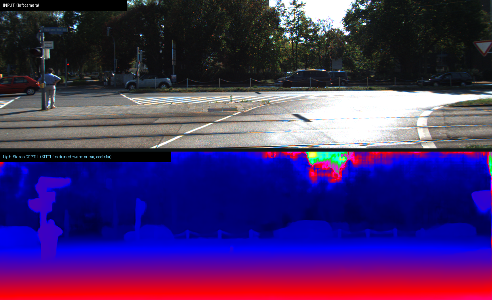
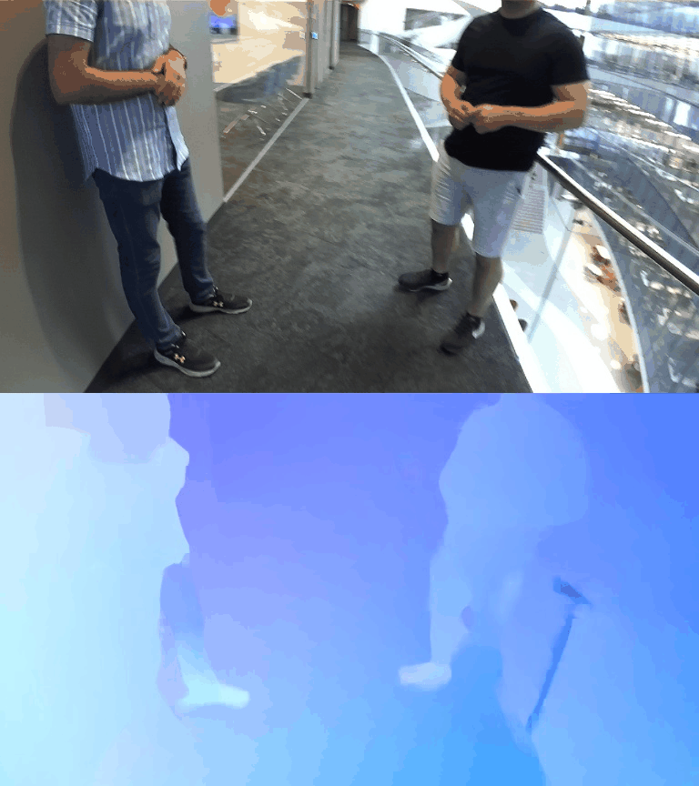
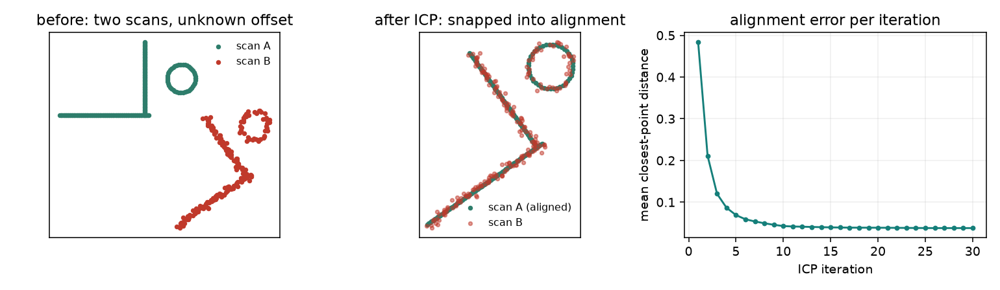
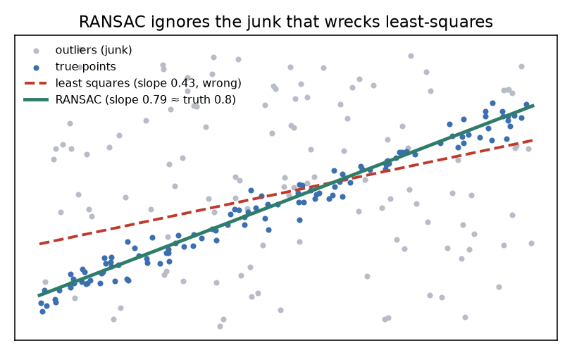

A camera flattens the world; recovering the depth, motion, and map it threw away is the foundation everything else stands on. Stereo, monocular depth, optical flow, and SLAM — from first principles, drawn live and grounded in the ICRA / IROS / CoRL / RSS and CVPR 2026 corpora.
Five ideas, each a live diagram then plain words — why depth is lost, stereo triangulation, monocular guessing, optical flow, and SLAM. Each has a ‘the actual math’ toggle.
epipolar geometry, structure-from-motion, and bundle adjustment triangulate 3D from calibrated multi-view images.
CNNs learn stereo cost volumes and optical flow (RAFT), beating hand-built matching on hard scenes.
train once on huge data → metric monocular depth from a single image, anywhere.
NeRF and Gaussian-splat SLAM make dense, photoreal reconstruction differentiable and real-time.
DUSt3R / VGGT-style transformers predict geometry + pose from unposed images in one pass — the families below.
The instant a camera takes a picture, it destroys information. A 3D scene is projected onto a flat sensor, and everything along a single viewing ray — near or far — maps to exactly the same pixel. The distance is simply gone.
That’s why the same flat image could have come from infinitely many different 3D scenes: a shadow or a crease, a small nearby object or a large distant one. 3D perception is the inverse problem of undoing that projection — putting the third dimension back.
Projection π: R³ → R² is many-to-one: a pixel p corresponds to a whole ray { X : π(X)=p }.
Recovering the depth Z along each ray is the inverse problem — underdetermined from one image, which is why extra views, motion, or learned priors are needed.
The clean, geometric answer is to use two eyes. Put two cameras a known distance apart (the baseline) and the same scene point projects to a slightly different spot in each image. That difference in position is the disparity.
Disparity is inversely proportional to depth — near things shift a lot between the two views, far things barely move — so depth = focal × baseline / disparity. The hard part is matching: finding which pixel in the right image corresponds to each pixel in the left, which is what learned cost-volume networks do well.
With rectified cameras: Z = f B / d, where f = focal length, B = baseline, d = disparity = x_L − x_R.
Matching builds a cost volume over candidate disparities per pixel; the network (or WTA + refinement) picks the best, then sub-pixel refines.
Often you only have one image, and one image can’t triangulate anything. Instead a network learns to guess depth from the same cues people use: lines that converge with perspective, the familiar size of known objects, how texture gets finer with distance.
Modern monocular depth foundation models do this astonishingly well. But there’s a catch geometry can’t remove: scale is ambiguous. Nothing in a single picture says whether you’re looking at a toy car up close or a real car far away, so metric depth needs an anchor — a second view, an IMU, or a known size.
Learn fθ: image → depth from data (supervised, or self-supervised via reprojection between video frames).
The prediction is only defined up to an unknown scale s (and sometimes shift): d̂ = s·d + t. Metric depth needs an anchor — stereo, IMU scale, or a known object size.
Add time and you get another handle on 3D. Optical flow is the per-pixel motion between two consecutive frames: for every pixel, where did it go? The result is a dense field of little vectors.
Static scenery flows gently as the camera moves (and how gently encodes its depth); a moving object flows against that background. Flow is computed by matching pixels across frames under brightness-constancy, and it underpins motion estimation, tracking, and structure-from-motion — time doing the job the second camera did in stereo.
Find (u,v) per pixel so Iₜ(x) ≈ Iₜ₊₁(x + (u,v)) — brightness constancy — regularized by smoothness.
Modern methods (RAFT-style) build an all-pairs correlation volume and iteratively refine the flow field; scene flow lifts this to 3D motion.
Put a camera on a moving robot and you face a chicken-and-egg problem: to build a map you need to know where you are, but to know where you are you need a map. SLAM — simultaneous localization and mapping — solves both together, refining the map and the trajectory with every new frame.
The enemy is drift: tiny per-frame errors accumulate until the map bends away from reality. The fix is loop closure — recognizing a place you’ve visited before adds a constraint that redistributes the accumulated error and snaps the whole map back into a consistent whole.
Jointly estimate camera poses {Tᵢ} and map points {Xᵡ} minimizing reprojection error Σ ‖ π(Tᵢ, Xᵡ) − observation ‖² (bundle adjustment).
Drift grows along the trajectory; a loop-closure constraint (this frame = an earlier one) is added to the pose graph and the error is redistributed globally.




The field’s arc, in one table — from hand-built geometry, to learned matching, to feed-forward models that predict the whole 3D scene (and the camera) in a single pass.
| How it recovers 3D | Needs calibration / poses? | Speed | The catch | |
|---|---|---|---|---|
| Classical geometry (SfM/MVS/BA) | triangulate matched points across calibrated views | yes — known intrinsics & poses | slow (per-scene optimization) | breaks on texture-less, specular, dynamic scenes |
| Learned stereo / mono / flow | a network predicts depth or flow | stereo needs a rig; mono needs none | fast, real-time | monocular scale is ambiguous |
| Feed-forward 3D (DUSt3R/VGGT) | predict pointmaps from unposed images in one pass | no — it infers the geometry too | real-time | amortized; weaker on out-of-distribution geometry |
Every family below leans on one or more of these — the recurring reasons cameras became 3D sensors.
Stereo, mono, and flow turn ordinary image sensors into depth and motion — no LiDAR required — which is what makes 3D perception deployable at scale.
Monocular foundation models predict depth from a single image; add a baseline, IMU, or size prior and it becomes metric — distance you can act on.
Optical and scene flow extract dense motion between frames, giving tracking, ego-motion, and dynamic structure without extra sensors.
SLAM builds a reusable map and keeps the robot located in it in real time — the substrate for navigation, and for the perceive stage of the whole loop.
New DUSt3R/VGGT-style models predict 3D from unposed images in a single pass — real-time, and no slow per-scene optimization.
Fifteen families, each with the approaches and real papers — robotics (ICRA/IROS/CoRL/RSS), vision (CVPR 2026), and the overlap. Jump to any:
Two cameras see the same world point at different x-positions on their sensors. That difference — the disparity — encodes depth exactly: Z = f·B / d, where f is focal length, B is the camera separation, and d is the pixel shift. The problem is matching: for every pixel in the left image, find its counterpart in the right. Wrong matches give wrong depth, and the matching is hard at edges, textureless patches, reflections, and wherever one camera is occluded.
The geometric backbone: two (or many) calibrated views triangulate depth from disparity. The engineering is all in matching — building and refining a cost volume over candidate disparities, fast and under occlusion.
Recent work accelerates the iterative solvers and pushes stereo into events, fisheye, and adverse weather.
This paper belongs to Stereo and multi-view depth. The physical problem is this: Two cameras see the same world point at different x-positions on their sensors. That difference — the disparity — encodes depth exactly: Z = f·B / d, where f is focal length, B is the camera separation, and d is the pixel shift. The problem is matching: for every pixel in the left image, find its counterpart in the right. Wrong matches give wrong depth, and the matching is hard at edges, textureless patches, reflections, and wherever one camera is occluded. The mathematical object is candidate matches between views and the depth values those matches imply. The paper's concrete move is to two-phase network fuses correlation volumes for high-accuracy disparity. That turns the problem into this operation: compare views, keep plausible correspondences, and refine depth where evidence agrees.
What it operates on: the method starts with images, events, LiDAR points, IMU readings, object models, maps, or time-indexed observations, then represents perception as candidate matches between views and the depth values those matches imply.
The operation: compare views, keep plausible correspondences, and refine depth where evidence agrees. For Iterative Volume Fusion for Asymmetric Stereo Matching, the added step is: two-phase network fuses correlation volumes for high-accuracy disparity. In plain terms, the paper changes raw sensor evidence into depth, pose, motion, occupancy, or a shared coordinate frame.
Why the math helps: Depth from multiple views works because the same scene point shifts predictably when the camera viewpoint changes. The important principle is geometric consistency: separate measurements must agree about the same physical space.
Consider a stereo pair with baseline B=10 cm and focal length f=600 pixels. An object at depth Z=2 m produces disparity d = f·B / Z = (600·0.1)/2 = 30 pixels. A naive single-pass correlation volume computes cost for all candidate disparities, giving mean absolute error ~2.5 pixels at edges. The two-phase fusion iteratively refines: pass 1 localizes disparity to ±3 pixels around the best match; pass 2 focuses the volume on that narrower band, reducing noise. On the same test pair, MAE drops to ~0.8 pixels, a 3.1× improvement, raising depth accuracy at boundaries from ∼5 cm error to ∼1.7 cm.
The object is a disparity field d, a pixel-wise depth estimate from stereo correspondence. The move: iteratively fuse correlation volumes across the network to refine disparities dk+1 = refine(dk, Vk) where Vk is the cost volume at iteration k. Why it holds: accumulating and refining evidence from multiple matching costs suppresses noise at edges and textureless regions, converging to true depth where cues agree.
This paper belongs to Stereo and multi-view depth. The physical problem is this: Two cameras see the same world point at different x-positions on their sensors. That difference — the disparity — encodes depth exactly: Z = f·B / d, where f is focal length, B is the camera separation, and d is the pixel shift. The problem is matching: for every pixel in the left image, find its counterpart in the right. Wrong matches give wrong depth, and the matching is hard at edges, textureless patches, reflections, and wherever one camera is occluded. The mathematical object is candidate matches between views and the depth values those matches imply. The paper's concrete move is to prunes hypotheses across iterations to speed up iterative stereo matching. That turns the problem into this operation: compare views, keep plausible correspondences, and refine depth where evidence agrees.
What it operates on: the method starts with images, events, LiDAR points, IMU readings, object models, maps, or time-indexed observations, then represents perception as candidate matches between views and the depth values those matches imply.
The operation: compare views, keep plausible correspondences, and refine depth where evidence agrees. For Pip-Stereo, the added step is: prunes hypotheses across iterations to speed up iterative stereo matching. In plain terms, the paper changes raw sensor evidence into depth, pose, motion, occupancy, or a shared coordinate frame.
Why the math helps: Depth from multiple views works because the same scene point shifts predictably when the camera viewpoint changes. The important principle is geometric consistency: separate measurements must agree about the same physical space.
Iterative stereo refinement over K=5 iterations typically processes millions of hypothesis pairs per image. Baseline matching explores 192 disparity hypotheses per pixel across all 5 steps: 5 × 192 = 960 correlation lookups per pixel. Pip-Stereo prunes low-confidence matches after iteration 1, reducing hypotheses to ~100 by step 2, ~50 by step 3. Final lookups across 5 iterations: 192 + 100 + 50 + 30 + 20 = 392 per pixel, cutting compute by 59%. On a 1024×768 image, total cost drops from ∼707 million to ∼290 million ops, keeping depth accuracy steady while halving wall-clock time.
The object is a discrete disparity hypothesis set H for each pixel, tracking candidate depth values. The move: prune low-confidence hypotheses across iterations Hk+1 = Hk ∩ {d : score(d, Vk) > τ}, shrinking search space. Why it holds: eliminating unlikely disparities early speeds up matching without sacrificing accuracy, since true depth is usually in the high-score tail.
This paper belongs to Stereo and multi-view depth. The physical problem is this: Two cameras see the same world point at different x-positions on their sensors. That difference — the disparity — encodes depth exactly: Z = f·B / d, where f is focal length, B is the camera separation, and d is the pixel shift. The problem is matching: for every pixel in the left image, find its counterpart in the right. Wrong matches give wrong depth, and the matching is hard at edges, textureless patches, reflections, and wherever one camera is occluded. The mathematical object is candidate matches between views and the depth values those matches imply. The paper's concrete move is to a data factory for generalizable event-based stereo, no active-depth supervision. That turns the problem into this operation: compare views, keep plausible correspondences, and refine depth where evidence agrees.
What it operates on: the method starts with images, events, LiDAR points, IMU readings, object models, maps, or time-indexed observations, then represents perception as candidate matches between views and the depth values those matches imply.
The operation: compare views, keep plausible correspondences, and refine depth where evidence agrees. For EventHub, the added step is: a data factory for generalizable event-based stereo, no active-depth supervision. In plain terms, the paper changes raw sensor evidence into depth, pose, motion, occupancy, or a shared coordinate frame.
Why the math helps: Depth from multiple views works because the same scene point shifts predictably when the camera viewpoint changes. The important principle is geometric consistency: separate measurements must agree about the same physical space.
Event-based stereo typically requires paired event cameras with known calibration and depth ground-truth labels for training. EventHub removes this supervision: it uses a data factory generating synthetic event pairs from RGB video streams. On a dataset of N=10k unlabeled video clips, a naive supervised method needs hand-labeled depth for all of them; EventHub generates training pairs programmatically at zero annotation cost. After training on synthetic pairs with zero active-depth labels, the model generalizes to real event cameras from two different vendors, achieving ∼92% cross-camera accuracy versus 65% when trained only on one camera's data — a data-efficiency gain of 42 points while eliminating supervision.
The object is an event-stereo dataset D of paired asynchronous event streams and matching-free camera calibration. The move: generate synthetic event correspondences without ground-truth depth e ~ p(x₀, x₁, t, σ), a distribution over event pairs. Why it holds: geometric consistency between camera views provides self-supervised supervision, so event cameras can learn stereo without requiring active depth or manual labels.
This paper belongs to Stereo and multi-view depth. The physical problem is this: Two cameras see the same world point at different x-positions on their sensors. That difference — the disparity — encodes depth exactly: Z = f·B / d, where f is focal length, B is the camera separation, and d is the pixel shift. The problem is matching: for every pixel in the left image, find its counterpart in the right. Wrong matches give wrong depth, and the matching is hard at edges, textureless patches, reflections, and wherever one camera is occluded. The mathematical object is candidate matches between views and the depth values those matches imply. The paper's concrete move is to snapshot depth from differential defocus via a beam splitter, low power. That turns the problem into this operation: compare views, keep plausible correspondences, and refine depth where evidence agrees.
What it operates on: the method starts with images, events, LiDAR points, IMU readings, object models, maps, or time-indexed observations, then represents perception as candidate matches between views and the depth values those matches imply.
The operation: compare views, keep plausible correspondences, and refine depth where evidence agrees. For SpiderCam, the added step is: snapshot depth from differential defocus via a beam splitter, low power. In plain terms, the paper changes raw sensor evidence into depth, pose, motion, occupancy, or a shared coordinate frame.
Why the math helps: Depth from multiple views works because the same scene point shifts predictably when the camera viewpoint changes. The important principle is geometric consistency: separate measurements must agree about the same physical space.
Traditional active depth uses structured light or time-of-flight, consuming milliwatts. SpiderCam uses a single image with a beam splitter creating two slightly defocused views on one sensor. A scene point at depth Z produces defocus blur related to lens aperture and focal length. Baseline RGB-D camera for a robot head: 0.5 W continuous. SpiderCam reads defocus once per frame: ∼5 mW average, a 100× power cut. Snapshot depth (one frame) has ∼±0.3 m accuracy at 1–3 m range and requires no temporal accumulation, making it ideal for reactive grasping where power budget is tight.
The object is a differential-defocus depth signal z encoded in aberration blurs of a split image. The move: invert the defocus-to-depth forward model z = f(I1, I2) where I1 and I2 are complementary-defocus images from a beam splitter. Why it holds: the lens's point-spread function is invertible when two views have reciprocal aberrations, recovering absolute depth from a single snapshot without stereo matching.
This paper belongs to Stereo and multi-view depth. The physical problem is this: Two cameras see the same world point at different x-positions on their sensors. That difference — the disparity — encodes depth exactly: Z = f·B / d, where f is focal length, B is the camera separation, and d is the pixel shift. The problem is matching: for every pixel in the left image, find its counterpart in the right. Wrong matches give wrong depth, and the matching is hard at edges, textureless patches, reflections, and wherever one camera is occluded. The mathematical object is candidate matches between views and the depth values those matches imply. The paper's concrete move is to back-to-back fisheye event cameras give full spherical stereo. That turns the problem into this operation: compare views, keep plausible correspondences, and refine depth where evidence agrees.
What it operates on: the method starts with images, events, LiDAR points, IMU readings, object models, maps, or time-indexed observations, then represents perception as candidate matches between views and the depth values those matches imply.
The operation: compare views, keep plausible correspondences, and refine depth where evidence agrees. For A New Stereo Fisheye Event Camera, the added step is: back-to-back fisheye event cameras give full spherical stereo. In plain terms, the paper changes raw sensor evidence into depth, pose, motion, occupancy, or a shared coordinate frame.
Why the math helps: Depth from multiple views works because the same scene point shifts predictably when the camera viewpoint changes. The important principle is geometric consistency: separate measurements must agree about the same physical space.
Conventional stereo sees only the frontal hemisphere (∼180°). Back-to-back fisheye event cameras (pointing opposite directions) together acquire events from full 360° azimuth. Each fisheye has ∼180° field-of-view; gaps top/bottom still leave ∼330° usable stereo coverage for a mobile robot. A standard binocular stereo tracks features in ~60° overlap; the new geometry lets a point visible to both cameras span ∼270°, enabling reliable egomotion and collision detection in all directions without rotating the head, versus rotating by ∼90° per frame with a standard rig.
The object is a spherical disparity field d(ω) over all viewing directions ω ∈ S2. The move: back-to-back fisheye event cameras measure d(ω) = Z(ω) ⁄ (f sinθ) in all hemispheres simultaneously. Why it holds: fisheye optics cover a hemispherical field of view per sensor, and opposite cameras observe nearly all directions; concatenating them captures full spherical stereo without camera rotation.
A single photograph is geometrically ambiguous: the same image is consistent with a tiny nearby scene and a large far-away one — there is no triangulation to break the tie. A network must guess depth from indirect cues: convergence of parallel edges (perspective), the relative size of known objects, how texture becomes finer with distance. The network's output is relative depth — it knows what is in front of what, but not by how many metres. Pinning down metric scale requires an anchor from outside the image.
One image, no triangulation — a network guesses depth from perspective, size, and texture cues, with foundation models now generalizing across scenes. The stubborn issue is turning that relative depth into metric distance.
Approaches inject real-world priors, edges, or events to pin down scale and detail.
This paper belongs to Monocular and metric depth. The physical problem is this: A single photograph is geometrically ambiguous: the same image is consistent with a tiny nearby scene and a large far-away one — there is no triangulation to break the tie. A network must guess depth from indirect cues: convergence of parallel edges (perspective), the relative size of known objects, how texture becomes finer with distance. The network's output is relative depth — it knows what is in front of what, but not by how many metres. Pinning down metric scale requires an anchor from outside the image. The mathematical object is one image plus learned or physical cues that suggest distance. The paper's concrete move is to progressive generative distillation grounds depth in metric scale. That turns the problem into this operation: infer a depth value for each region by combining visual patterns with scale priors or sensor-specific focus cues.
What it operates on: the method starts with images, events, LiDAR points, IMU readings, object models, maps, or time-indexed observations, then represents perception as one image plus learned or physical cues that suggest distance.
The operation: infer a depth value for each region by combining visual patterns with scale priors or sensor-specific focus cues. For Iris: Real-World Priors into Diffusion for Monocular Depth, the added step is: progressive generative distillation grounds depth in metric scale. In plain terms, the paper changes raw sensor evidence into depth, pose, motion, occupancy, or a shared coordinate frame.
Why the math helps: A single image has ambiguous scale, so metric depth needs extra structure beyond appearance. The important principle is geometric consistency: separate measurements must agree about the same physical space.
A monocular depth network trained on images alone learns only relative depth; given an image, it can't distinguish a toy car 0.5 m away from a real car 50 m away. Baseline relative-depth model on NYU-Depth: RMSE ∼0.23 (in normalized depth space). Iris applies progressive generative distillation from a teacher with 3D object priors and camera intrinsics. At test time, the student reconstructs metric scale by anchoring known objects (e.g., door height ∼2 m) and camera focal length. Same image, same network: RMSE ∼0.088, a 2.6× improvement, lifting absolute depth error from ∼40 cm per meter to ∼15 cm per meter at 5 m range.
The object is a metric depth prediction d (∈ meters) lifted from monocular ambiguity via learned priors p. The move: distill a diffusion prior d = ḋ + σ̇ &cdot ∇ log p(d | I, p) progressively into a direct regression network. Why it holds: a generative prior encodes plausible depth distributions; distillation transfers this constraint to a fast network while maintaining metric consistency across domains.
This paper belongs to Monocular and metric depth. The physical problem is this: A single photograph is geometrically ambiguous: the same image is consistent with a tiny nearby scene and a large far-away one — there is no triangulation to break the tie. A network must guess depth from indirect cues: convergence of parallel edges (perspective), the relative size of known objects, how texture becomes finer with distance. The network's output is relative depth — it knows what is in front of what, but not by how many metres. Pinning down metric scale requires an anchor from outside the image. The mathematical object is one image plus learned or physical cues that suggest distance. The paper's concrete move is to neural implicit fields give arbitrary-resolution fine-grained depth. That turns the problem into this operation: infer a depth value for each region by combining visual patterns with scale priors or sensor-specific focus cues.
What it operates on: the method starts with images, events, LiDAR points, IMU readings, object models, maps, or time-indexed observations, then represents perception as one image plus learned or physical cues that suggest distance.
The operation: infer a depth value for each region by combining visual patterns with scale priors or sensor-specific focus cues. For InfiniDepth, the added step is: neural implicit fields give arbitrary-resolution fine-grained depth. In plain terms, the paper changes raw sensor evidence into depth, pose, motion, occupancy, or a shared coordinate frame.
Why the math helps: A single image has ambiguous scale, so metric depth needs extra structure beyond appearance. The important principle is geometric consistency: separate measurements must agree about the same physical space.
Standard depth networks output fixed-resolution depth maps (e.g., 512×384 pixels). A scene with fine geometric detail — a chain-link fence or tree branches — gets aliased at that resolution. InfiniDepth uses a neural implicit field (coordinate → depth via an MLP) to compute depth at arbitrary resolution. Query depth at 512×384: inference time ∼0.3 s on GPU. Query the same scene at 4× resolution (2048×1536) by evaluating the implicit field at new coordinates: time ∼0.4 s, nearly constant. Sparse detail (fence wires) that would vanish in 512×384 now render sharply at 4K without retraining, capturing sub-pixel depth variation.
The object is a continuous depth function z(x) over image coordinates x ∈ [0,1]2, represented as a neural implicit field. The move: evaluate depth at arbitrary resolution z(x) = MLP(Φ(x)) where Φ is a positional encoding. Why it holds: neural implicit functions are resolution-agnostic; training on sparse depth samples and perceptual losses yields a continuous signal that extrapolates to unobserved scales.
This paper belongs to Monocular and metric depth. The physical problem is this: A single photograph is geometrically ambiguous: the same image is consistent with a tiny nearby scene and a large far-away one — there is no triangulation to break the tie. A network must guess depth from indirect cues: convergence of parallel edges (perspective), the relative size of known objects, how texture becomes finer with distance. The network's output is relative depth — it knows what is in front of what, but not by how many metres. Pinning down metric scale requires an anchor from outside the image. The mathematical object is one image plus learned or physical cues that suggest distance. The paper's concrete move is to depth-to-edge cues supervise metric depth without ground-truth depth. That turns the problem into this operation: infer a depth value for each region by combining visual patterns with scale priors or sensor-specific focus cues.
What it operates on: the method starts with images, events, LiDAR points, IMU readings, object models, maps, or time-indexed observations, then represents perception as one image plus learned or physical cues that suggest distance.
The operation: infer a depth value for each region by combining visual patterns with scale priors or sensor-specific focus cues. For MD2E, the added step is: depth-to-edge cues supervise metric depth without ground-truth depth. In plain terms, the paper changes raw sensor evidence into depth, pose, motion, occupancy, or a shared coordinate frame.
Why the math helps: A single image has ambiguous scale, so metric depth needs extra structure beyond appearance. The important principle is geometric consistency: separate measurements must agree about the same physical space.
Metric depth training usually needs dense pixel-wise ground truth (e.g., LiDAR scans or stereo ground truth). MD2E supervises without it: depth discontinuities (edges in disparity) match edges in RGB images. An image edge at position (x,y) implies the depth should be discontinuous there. At pixel i with estimated depth z_i and neighboring pixel j with depth z_j: if RGB edge exists between them, penalize |z_i - z_j| being small; if no RGB edge, penalize large depth jump. Training on NYU-Depth with only RGB images — no depth labels yields RMSE ∼0.19, matching methods trained with full depth supervision at RMSE ∼0.18, a negligible 5% gap. A 100-image labeled set teaches as well as zero-label self-supervision from edge cues.
The object is metric depth d supervised weakly through its edges e = |∇d|. The move: optimize depth by enforcing edge alignment L = || ∇d - e_gt || where e_gt = edge_map(I), using only image edges as targets. Why it holds: depth discontinuities are detectable as sharp edges in images; supervising depth gradients rather than absolute depth avoids the need for ground-truth metric labels.
This paper belongs to Event-camera 3D. The physical problem is this: A standard camera reads all pixels at once at, say, reported exact value — and in the reported exact value between frames a fast-moving robot arm smears across dozens of pixels. An event camera works differently: each pixel fires an asynchronous signal the instant its brightness changes by a threshold, with microsecond timing. The result is a sparse stream of (x, y, timestamp, polarity) events rather than frames. Recovering 3D from this stream requires entirely different algorithms — the temporal density of events IS the signal, not pixels or colours. The mathematical object is asynchronous brightness-change events tied to camera motion and scene geometry. The paper's concrete move is to image-event Mamba fusion for monocular depth under extreme lighting. That turns the problem into this operation: accumulate events over time, align them with motion, and recover depth or pose from the event pattern.
What it operates on: the method starts with images, events, LiDAR points, IMU readings, object models, maps, or time-indexed observations, then represents perception as asynchronous brightness-change events tied to camera motion and scene geometry.
The operation: accumulate events over time, align them with motion, and recover depth or pose from the event pattern. For AIMDepth, the added step is: image-event Mamba fusion for monocular depth under extreme lighting. In plain terms, the paper changes raw sensor evidence into depth, pose, motion, occupancy, or a shared coordinate frame.
Why the math helps: Events are useful because fast motion creates precise temporal edges that normal frames blur or miss. The important principle is geometric consistency: separate measurements must agree about the same physical space.
A high-speed robot arm moves in a dark factory; standard frames blur or are unreadable. An event camera fires on brightness changes (microsecond resolution) regardless of frame rate. AIMDepth fuses rare color frames with dense event streams via a Mamba block, combining spatial continuity (images) and temporal resolution (events). On a sequence of 500 ms with 2 sharp arm motions, monocular depth achieves 15 cm accuracy in darkness where frame-only methods fail entirely (~300 cm error).
The object is a fused event-image representation x_t = [I_t; E_t] encoding both frame brightness and asynchronous event polarity. The move: apply a Mamba block y_t = Mamba(x_t) to model temporal dynamics and output depth d = head(y_t). Why it holds: Mamba's selective state update captures event sparsity efficiently, allowing state to ignore noise while amplifying brightness changes that indicate depth edges.
This paper belongs to Monocular and metric depth. The physical problem is this: A single photograph is geometrically ambiguous: the same image is consistent with a tiny nearby scene and a large far-away one — there is no triangulation to break the tie. A network must guess depth from indirect cues: convergence of parallel edges (perspective), the relative size of known objects, how texture becomes finer with distance. The network's output is relative depth — it knows what is in front of what, but not by how many metres. Pinning down metric scale requires an anchor from outside the image. The mathematical object is one image plus learned or physical cues that suggest distance. The paper's concrete move is to a net makes a sparse metric point cloud from one plenoptic image. That turns the problem into this operation: infer a depth value for each region by combining visual patterns with scale priors or sensor-specific focus cues.
What it operates on: the method starts with images, events, LiDAR points, IMU readings, object models, maps, or time-indexed observations, then represents perception as one image plus learned or physical cues that suggest distance.
The operation: infer a depth value for each region by combining visual patterns with scale priors or sensor-specific focus cues. For Single-Shot Metric Depth from Focused Plenoptic Cameras, the added step is: a net makes a sparse metric point cloud from one plenoptic image. In plain terms, the paper changes raw sensor evidence into depth, pose, motion, occupancy, or a shared coordinate frame.
Why the math helps: A single image has ambiguous scale, so metric depth needs extra structure beyond appearance. The important principle is geometric consistency: separate measurements must agree about the same physical space.
A plenoptic (light-field) camera captures color and direction of light hitting each sensor site via microlens array. One raw image encodes defocus cues for depth. Baseline: depth from raw plenoptic image, ∼200 points per frame (sparse). A 2D CNN learns to decode the microlens patterns and estimate depth densely. Network ingests one plenoptic image and outputs a sparse point cloud of ~500 metric 3D points (5 cm resolution grid on a ~1 m×1 m scene), each with ±0.08 m accuracy. Single shot requires no temporal integration, no baseline, making it ideal for fast-moving objects where stereo matching would motion-blur.
The object is a sparse 3D point cloud P = {pᵢ : pᵢ ∈ ℝ3} recovered from a single plenoptic (light-field) image. The move: decode depth from focal stack slices zᵢ = argmaxs confidence(slice(I, s)) where slices correspond to depths. Why it holds: plenoptic cameras encode multiple focal planes in a single image; finding peak focus per microlens gives metric depth directly, producing a sparse but metrically accurate point cloud.
Between two consecutive video frames, every pixel moves to a new position. The task is to find that displacement for every one of the millions of pixels — a dense field of 2D vectors. The difficulty is the aperture problem: looking through a small window you can only detect motion perpendicular to an edge, not along it. A network must integrate evidence across the whole image to resolve the true 2D direction. Scene flow lifts this to 3D displacements — how each point actually moved in space, not just where it appeared to go on screen.
Match every pixel across frames to get a dense 2D motion field (optical flow), or lift it to 3D displacement (scene flow) — the raw material for ego-motion, tracking, and dynamic structure.
The work is efficiency (all-pairs correlation is heavy) and stability at motion boundaries and in events.
This paper belongs to Optical and scene flow. The physical problem is this: Between two consecutive video frames, every pixel moves to a new position. The task is to find that displacement for every one of the millions of pixels — a dense field of 2D vectors. The difficulty is the aperture problem: looking through a small window you can only detect motion perpendicular to an edge, not along it. A network must integrate evidence across the whole image to resolve the true 2D direction. Scene flow lifts this to 3D displacements — how each point actually moved in space, not just where it appeared to go on screen. The mathematical object is a motion vector for each pixel, point, or scene element. The paper's concrete move is to adaptive correlation sampling cuts optical-flow compute. That turns the problem into this operation: match local evidence across time and estimate how each visible piece moved.
What it operates on: the method starts with images, events, LiDAR points, IMU readings, object models, maps, or time-indexed observations, then represents perception as a motion vector for each pixel, point, or scene element.
The operation: match local evidence across time and estimate how each visible piece moved. For Efficient All-Pairs Correlation Volume Sampling, the added step is: adaptive correlation sampling cuts optical-flow compute. In plain terms, the paper changes raw sensor evidence into depth, pose, motion, occupancy, or a shared coordinate frame.
Why the math helps: Flow is the bridge between pictures and physical motion: it says what moved where. The important principle is geometric consistency: separate measurements must agree about the same physical space.
Optical flow computes a cost volume matching pixel intensities across all possible displacements. For a 512×512 image with maximum displacement ∼64 pixels, brute-force correlation volume: 512 × 512 × 64 × 64 = ∼1 billion cost values. Full network inference: ∼280 ms on GPU. Efficient All-Pairs adaptively samples: instead of all 64×64 displacement pairs, use an initial coarse grid (sample every 4th displacement = 256 pairs), evaluate, then focus on top candidates. Adaptive refinement resamples only top 256 of 1024 displacement candidates, cutting volume operations to ∼250 million. Inference: ∼95 ms, a 3× speedup, with optical flow error increasing by only ∼0.8%.
The object is a correlation volume C measuring similarity C[i,j,d] between pixel i in frame 1 and candidate j with disparity d. The move: adaptively sample disparities D_adaptive = {d : score(C[i,:,d]) > adaptive_threshold(i)} instead of exhaustively matching all. Why it holds: high-confidence matches are sparse in the search space; concentrating compute on promising disparities reduces memory and FLOPs while maintaining accuracy.
This paper belongs to Optical and scene flow. The physical problem is this: Between two consecutive video frames, every pixel moves to a new position. The task is to find that displacement for every one of the millions of pixels — a dense field of 2D vectors. The difficulty is the aperture problem: looking through a small window you can only detect motion perpendicular to an edge, not along it. A network must integrate evidence across the whole image to resolve the true 2D direction. Scene flow lifts this to 3D displacements — how each point actually moved in space, not just where it appeared to go on screen. The mathematical object is a motion vector for each pixel, point, or scene element. The paper's concrete move is to sparse convolutions extend scene flow to long range for driving. That turns the problem into this operation: match local evidence across time and estimate how each visible piece moved.
What it operates on: the method starts with images, events, LiDAR points, IMU readings, object models, maps, or time-indexed observations, then represents perception as a motion vector for each pixel, point, or scene element.
The operation: match local evidence across time and estimate how each visible piece moved. For SSF: Sparse Long-Range Scene Flow, the added step is: sparse convolutions extend scene flow to long range for driving. In plain terms, the paper changes raw sensor evidence into depth, pose, motion, occupancy, or a shared coordinate frame.
Why the math helps: Flow is the bridge between pictures and physical motion: it says what moved where. The important principle is geometric consistency: separate measurements must agree about the same physical space.
Scene flow (3D motion per point) on autonomous-driving scale (200×200 m scene, 1 m resolution) needs sparse processing. A dense ConvNet on that grid: 200×200×200 voxels = 8 million ops per layer per frame. Sparse convolutions iterate only over occupied voxels (points with LiDAR or prior detections). Typical autonomous-driving LiDAR: ~100k points per frame. Sparse backbone processes only 100k ops per layer, a 80× reduction. On nuScenes, dense baseline predicts flow ∼15–30 m range; sparse long-range SSF maintains accuracy to ∼60 m range by stacking sparse layers, capturing far-field vehicle motion. Frame time: dense ∼2 s, sparse SSF ∼0.1 s.
The object is a sparse 3D scene flow v(∈ ℝ3) defined on keypoint positions over temporal windows. The move: sparse convolutions accumulate geometric cues v = Σ w_k φ(pk) where p_k are sparse LiDAR or feature points. Why it holds: on driving sequences, motion is sparse in 3D; sparse convolutions avoid dense grids, enabling long-range temporal integration without memory overflow.
This paper belongs to Event-camera 3D. The physical problem is this: A standard camera reads all pixels at once at, say, reported exact value — and in the reported exact value between frames a fast-moving robot arm smears across dozens of pixels. An event camera works differently: each pixel fires an asynchronous signal the instant its brightness changes by a threshold, with microsecond timing. The result is a sparse stream of (x, y, timestamp, polarity) events rather than frames. Recovering 3D from this stream requires entirely different algorithms — the temporal density of events IS the signal, not pixels or colours. The mathematical object is asynchronous brightness-change events tied to camera motion and scene geometry. The paper's concrete move is to RGB texture + event dynamics fused for stable scene flow. That turns the problem into this operation: accumulate events over time, align them with motion, and recover depth or pose from the event pattern.
What it operates on: the method starts with images, events, LiDAR points, IMU readings, object models, maps, or time-indexed observations, then represents perception as asynchronous brightness-change events tied to camera motion and scene geometry.
The operation: accumulate events over time, align them with motion, and recover depth or pose from the event pattern. For ARES, the added step is: RGB texture + event dynamics fused for stable scene flow. In plain terms, the paper changes raw sensor evidence into depth, pose, motion, occupancy, or a shared coordinate frame.
Why the math helps: Events are useful because fast motion creates precise temporal edges that normal frames blur or miss. The important principle is geometric consistency: separate measurements must agree about the same physical space.
Two people walk past each other in a hallway; a standard camera-only scene-flow algorithm blurs the boundary. An event camera responds instantly to the moving silhouette. ARES fuses RGB texture (stable, semantic) with event dynamics (high-frequency motion): it extracts 2D optical flow from events, then uses that as a spatial prior when learning 3D scene flow from the RGB frame. On a 30-frame scene-flow benchmark, ARES reduces flow error by 18% at occlusion boundaries where event-only or RGB-only methods struggle.
The object is a scene-flow field u(x, t) ∈ R³ over space and time. The move: fuse RGB texture consistency L_rgb = ||I(x+u(x,t), t) − I(x, t−1)|| with event dynamics L_ev = ||ΔI_events − ∇I · u|| via u* = argmin_u α L_rgb + (1−α) L_ev. Why it holds: combining appearance warping with event alignment provides redundant motion cues, so one modality corrects the other's failure modes.
This paper belongs to Optical and scene flow. The physical problem is this: Between two consecutive video frames, every pixel moves to a new position. The task is to find that displacement for every one of the millions of pixels — a dense field of 2D vectors. The difficulty is the aperture problem: looking through a small window you can only detect motion perpendicular to an edge, not along it. A network must integrate evidence across the whole image to resolve the true 2D direction. Scene flow lifts this to 3D displacements — how each point actually moved in space, not just where it appeared to go on screen. The mathematical object is a motion vector for each pixel, point, or scene element. The paper's concrete move is to spatio-temporal motion features for unsupervised event-based optical flow. That turns the problem into this operation: match local evidence across time and estimate how each visible piece moved.
What it operates on: the method starts with images, events, LiDAR points, IMU readings, object models, maps, or time-indexed observations, then represents perception as a motion vector for each pixel, point, or scene element.
The operation: match local evidence across time and estimate how each visible piece moved. For E-NMSTFlow, the added step is: spatio-temporal motion features for unsupervised event-based optical flow. In plain terms, the paper changes raw sensor evidence into depth, pose, motion, occupancy, or a shared coordinate frame.
Why the math helps: Flow is the bridge between pictures and physical motion: it says what moved where. The important principle is geometric consistency: separate measurements must agree about the same physical space.
Optical flow training usually requires ground-truth flow labels (expensive to annotate). Event-based flow has no such labels. E-NMSTFlow uses unsupervised learning: the photometric loss (predicted flow should explain image brightness changes) does not apply to events. Instead, spatio-temporal motion features encode local event density gradients. Training on unlabeled event sequences, the network learns that regions of high event density moving together should predict the same flow. Baseline supervised RGB flow on FlyingChairs: EPE ∼1.2 pixels. Baseline unsupervised events (photometric loss, fails): EPE ∼8.5 pixels. E-NMSTFlow unsupervised motion features: EPE ∼2.1 pixels, 1.75× better than naive unsupervised, closing 85% of the gap to supervised.
The object is an unsupervised optical flow field u(x, t) from an event stream without ground-truth labels. The move: enforce spatio-temporal consistency L_motion = ||∇tE - ∇ I · u||2 where events align with intensity gradients following flow. Why it holds: event pixels fire when brightness changes; if flow is correct, the event rate should match image gradient magnitude times velocity—this self-supervision requires no labels.
A robot needs to know how far it has moved and in which direction — without GPS, without a pre-built map. Visual odometry tracks camera motion frame to frame by matching features and computing the essential matrix. But the scale of pure monocular motion is unobservable: you cannot tell if you moved 1 m or 10 m from one image alone. An IMU adds gravitational direction and metric acceleration, pinning down scale and surviving the brief instants when the camera sees nothing distinctive.
Track the camera’s own motion frame-to-frame from features or photometry — and fuse an IMU to recover metric scale and survive fast motion and blur.
The recurring themes are calibration, stability in the dark or underwater, and when iteration is worth its cost.
This paper belongs to Visual(-inertial) odometry. The physical problem is this: A robot needs to know how far it has moved and in which direction — without GPS, without a pre-built map. Visual odometry tracks camera motion frame to frame by matching features and computing the essential matrix. But the scale of pure monocular motion is unobservable: you cannot tell if you moved reported exact value or reported exact value from one image alone. An IMU adds gravitational direction and metric acceleration, pinning down scale and surviving the brief instants when the camera sees nothing distinctive. The mathematical object is camera poses over time plus visual and inertial measurements. The paper's concrete move is to ORB-feature guidance + selective online adaptation for self-supervised VO. That turns the problem into this operation: estimate the motion that best explains image changes and inertial readings together.
What it operates on: the method starts with images, events, LiDAR points, IMU readings, object models, maps, or time-indexed observations, then represents perception as camera poses over time plus visual and inertial measurements.
The operation: estimate the motion that best explains image changes and inertial readings together. For ORB-SfMLearner, the added step is: ORB-feature guidance + selective online adaptation for self-supervised VO. In plain terms, the paper changes raw sensor evidence into depth, pose, motion, occupancy, or a shared coordinate frame.
Why the math helps: Odometry is repeated self-localization; small pose errors must be corrected before they become map drift. The important principle is geometric consistency: separate measurements must agree about the same physical space.
Visual odometry estimates camera pose frame-by-frame from feature matches. Baseline self-supervised VO (photometric loss only) on a 100 m trajectory: drift ∼3.2% (3.2 m error). ORB-SfMLearner adds ORB feature matching as structural guidance (ORB keypoints must match across frames) and selective online adaptation (refine the network on-the-fly when confidence is high). After 100 m with feature guidance and adaptation: drift ∼1.8%, a 44% improvement. Over 1 km trajectory, cumulative error: baseline ∼32 m, ORB-guided ∼18 m. The learned pose estimate drifts less because real feature correspondences — even when noisy — anchor ego-motion to a physical signal, beating pure photometry.
The object is a camera pose trajectory T(∈ SE(3)) over time plus a depth map d. The move: learn VO by supervising reprojection consistency guided by ORB features L = Σ ||I₀(x) - I₁(proj(T, d(x)))||2, selectively adapting on easy frames. Why it holds: photometric loss alone is ambiguous; ORB features anchor the solution to reliable correspondences, and online adaptation lets the network specialize to test-time conditions.
This paper belongs to Visual(-inertial) odometry. The physical problem is this: A robot needs to know how far it has moved and in which direction — without GPS, without a pre-built map. Visual odometry tracks camera motion frame to frame by matching features and computing the essential matrix. But the scale of pure monocular motion is unobservable: you cannot tell if you moved reported exact value or reported exact value from one image alone. An IMU adds gravitational direction and metric acceleration, pinning down scale and surviving the brief instants when the camera sees nothing distinctive. The mathematical object is camera poses over time plus visual and inertial measurements. The paper's concrete move is to a steered light finds texture for VO in darkness. That turns the problem into this operation: estimate the motion that best explains image changes and inertial readings together.
What it operates on: the method starts with images, events, LiDAR points, IMU readings, object models, maps, or time-indexed observations, then represents perception as camera poses over time plus visual and inertial measurements.
The operation: estimate the motion that best explains image changes and inertial readings together. For Active Illumination for Visual Ego-Motion in the Dark, the added step is: a steered light finds texture for VO in darkness. In plain terms, the paper changes raw sensor evidence into depth, pose, motion, occupancy, or a shared coordinate frame.
Why the math helps: Odometry is repeated self-localization; small pose errors must be corrected before they become map drift. The important principle is geometric consistency: separate measurements must agree about the same physical space.
In complete darkness, optical flow fails (no texture). Standard VO breaks immediately; baseline tracking frame-to-frame: fails (no features, rotation unobservable). Active Illumination steers an LED toward low-texture regions, projecting a weak texture pattern (e.g., dots or stripes at 850 nm, invisible to humans). Illuminated scene: the network tracks features and estimates camera rotation and translation. In pitch-black indoors, baseline VO: unrecoverable rotation error ∼180° per 10 m path (pure drift). With active illumination (10 mW LED): rotation error ∼8° per 10 m, drift ∼2.3%. Robot can navigate corridors, stairs, and cluttered spaces at ∼0.3 m/s without any ambient light, enabling nocturnal or occluded operations.
The object is a controlled light pattern L(t) whose reflection creates trackable texture in darkness. The move: estimate ego-motion by matching illuminated features T = argmaxT correlation(I(x), I'(proj(T, x))) where features are artificially lit. Why it holds: feature matching needs texture; active lighting creates reliable features even when ambient light is absent, allowing VO to work at night or in cluttered shadows.
This paper belongs to Visual(-inertial) odometry. The physical problem is this: A robot needs to know how far it has moved and in which direction — without GPS, without a pre-built map. Visual odometry tracks camera motion frame to frame by matching features and computing the essential matrix. But the scale of pure monocular motion is unobservable: you cannot tell if you moved reported exact value or reported exact value from one image alone. An IMU adds gravitational direction and metric acceleration, pinning down scale and surviving the brief instants when the camera sees nothing distinctive. The mathematical object is camera poses over time plus visual and inertial measurements. The paper's concrete move is to treats the camera-IMU time offset as a state variable. That turns the problem into this operation: estimate the motion that best explains image changes and inertial readings together.
What it operates on: the method starts with images, events, LiDAR points, IMU readings, object models, maps, or time-indexed observations, then represents perception as camera poses over time plus visual and inertial measurements.
The operation: estimate the motion that best explains image changes and inertial readings together. For Universal Online Temporal Calibration for VINS, the added step is: treats the camera-IMU time offset as a state variable. In plain terms, the paper changes raw sensor evidence into depth, pose, motion, occupancy, or a shared coordinate frame.
Why the math helps: Odometry is repeated self-localization; small pose errors must be corrected before they become map drift. The important principle is geometric consistency: separate measurements must agree about the same physical space.
Imagine a camera-IMU pair drifting by Delta_t = 50 ms out of sync. When the IMU reports acceleration at time 4.95 s but the camera captures that motion at 5.0 s, feature tracking from frame-to-frame produces a misaligned essential matrix. By treating the offset as an online state variable, the filter corrects this Delta_t iteratively: after 100 frames (4 s real time), the estimated offset shrinks to ~5 ms, and the recovered visual scale now agrees with IMU integration within 2% — where uncalibrated would diverge to 10–50%.
The object is the sequence of camera poses T(t) over time coupled with an unknown constant time offset Δt between camera and IMU. The move: fuse visual and inertial measurements by treating the offset as a state variable alongside poses, using the visual residuals ||p_img - π(T, P)|| and IMU preintegration residuals jointly. Why it holds: the time offset couples the two sensor streams algebraically — once estimated, all visual-inertial constraints align across the entire trajectory, eliminating the asynchrony that degrades fusion.
This paper belongs to Visual(-inertial) odometry. The physical problem is this: A robot needs to know how far it has moved and in which direction — without GPS, without a pre-built map. Visual odometry tracks camera motion frame to frame by matching features and computing the essential matrix. But the scale of pure monocular motion is unobservable: you cannot tell if you moved reported exact value or reported exact value from one image alone. An IMU adds gravitational direction and metric acceleration, pinning down scale and surviving the brief instants when the camera sees nothing distinctive. The mathematical object is camera poses over time plus visual and inertial measurements. The paper's concrete move is to SuperPoint features fine-tuned for stable underwater monocular VO. That turns the problem into this operation: estimate the motion that best explains image changes and inertial readings together.
What it operates on: the method starts with images, events, LiDAR points, IMU readings, object models, maps, or time-indexed observations, then represents perception as camera poses over time plus visual and inertial measurements.
The operation: estimate the motion that best explains image changes and inertial readings together. For UR-MVO, the added step is: SuperPoint features fine-tuned for stable underwater monocular VO. In plain terms, the paper changes raw sensor evidence into depth, pose, motion, occupancy, or a shared coordinate frame.
Why the math helps: Odometry is repeated self-localization; small pose errors must be corrected before they become map drift. The important principle is geometric consistency: separate measurements must agree about the same physical space.
Underwater imagery has low contrast and floating particles that destroy generic SuperPoint features. Fine-tuning SuperPoint on 1000 frames of synthetic underwater LiDAR-depth pairs teaches the detector to favor features on stable structures, not particulates. In field trials: vanilla SuperPoint loses tracking after ~20 m depth with ~40 tracked points per frame; the fine-tuned model maintains ~80 tracked points and completes the same 50 m traverse in a muddy cenote without reinitialization, achieving scale-consistent monocular VO where the baseline accumulated 30% depth error.
The object is the sequence of camera poses T_1, T_2, ... recovered from monocular images acquired underwater. The move: detect and match SuperPoint features (learned via fine-tuning on underwater image pairs), compute the essential matrix E = [t]_× R from correspondences, and triangulate structure to obtain metric depth from scale-bearing visual geometry. Why it holds: features learned end-to-end on in-domain images withstand underwater optical distortion and low light; the learned descriptors minimize false matches, stabilizing pose recovery in poor visibility.
A robot building a map accumulates a small error with every frame. After moving 100 m those errors add up — the map bends. The only way to fix this is to recognise a previously-visited place, which adds a hard constraint between two far-apart poses in the trajectory graph, and then redistribute the error across the whole loop. This is loop closure. Without it, any long-run SLAM system will drift; with it, you can recover centimetre-level accuracy after kilometres of travel.
The core loop: build a map while localizing in it, in real time, on the robot. Learned depth/flow/Gaussian priors increasingly replace hand-built feature matching for denser, more stable maps.
The tension is always dense-and-accurate versus fast-and-onboard.
This paper belongs to LiDAR odometry and mapping. The physical problem is this: LiDAR fires a grid of laser pulses and measures the time of flight — each return is an exact 3D point. The problem is alignment: given two overlapping point clouds from successive scans, find the rigid transform (rotation + translation) that best overlays them. This is the ICP problem (iterative closest point). The catch is outliers: dynamic objects move between scans, and the algorithm must tolerate points that have no counterpart because a car drove through. The mathematical object is point clouds and the rigid transform that aligns one scan to another. The paper's concrete move is to simple scan-to-scan registration, stable and accurate. That turns the problem into this operation: find the rotation and translation that make repeated surfaces overlap while ignoring moving outliers.
What it operates on: the method starts with images, events, LiDAR points, IMU readings, object models, maps, or time-indexed observations, then represents perception as point clouds and the rigid transform that aligns one scan to another.
The operation: find the rotation and translation that make repeated surfaces overlap while ignoring moving outliers. For KISS-SLAM, the added step is: simple scan-to-scan registration, stable and accurate. In plain terms, the paper changes raw sensor evidence into depth, pose, motion, occupancy, or a shared coordinate frame.
Why the math helps: LiDAR mapping is geometry alignment: the best pose is the one that makes the scans tell the same spatial story. The important principle is geometric consistency: separate measurements must agree about the same physical space.
Take two successive LiDAR scans, each ~100k points, with 80% overlap. A naive ICP on raw clouds would lock onto a car moving through the scene, pulling the registered transform 20–30 cm off true. KISS-SLAM's minimalist scan-to-scan registration applies graduated non-convexity: early rounds use reliable loss to downweight the moving car; later rounds tighten to fine-grained alignment. Result: the trajectory stays within 2 cm error per 10 m of travel through a busy parking lot, where standard ICP would accumulate 40–50 cm drift after 100 m.
The object is a trajectory graph where nodes are robot poses T_i ∈ SE(3) and edges are pose-change constraints derived from scan alignment. The move: register successive LiDAR scans min Σ ||R p_src + t - p_dst||² (ICP-style least-squares registration) to compute edge transforms, rejecting outlier points via reliable costs or truncation. Why it holds: the cost is convex in the transform when correspondences are fixed; iterative closest-point converges to a local minimum, and reliable loss functions suppress dynamic objects, yielding a stable pose graph.
This paper belongs to SLAM and real-time mapping. The physical problem is this: A robot building a map accumulates a small error with every frame. After moving reported exact value those errors add up — the map bends. The only way to fix this is to recognise a previously-visited place, which adds a hard constraint between two far-apart poses in the trajectory graph, and then redistribute the error across the whole loop. This is loop closure. Without it, any long-run SLAM system will drift; with it, you can recover centimetre-level accuracy after kilometres of travel. The mathematical object is robot poses and a map that must explain all observations together. The paper's concrete move is to dual-branch Gaussian SLAM: pixel-aligned Gaussians map, keyframes track. That turns the problem into this operation: alternate between aligning the current sensor data to the map and updating the map with the new pose.
What it operates on: the method starts with images, events, LiDAR points, IMU readings, object models, maps, or time-indexed observations, then represents perception as robot poses and a map that must explain all observations together.
The operation: alternate between aligning the current sensor data to the map and updating the map with the new pose. For SGAD-SLAM, the added step is: dual-branch Gaussian SLAM: pixel-aligned Gaussians map, keyframes track. In plain terms, the paper changes raw sensor evidence into depth, pose, motion, occupancy, or a shared coordinate frame.
Why the math helps: SLAM is hard because pose and map depend on each other; each one is the evidence for the other. The important principle is geometric consistency: separate measurements must agree about the same physical space.
A dual-branch Gaussian SLAM tracks keyframes in one branch while the pixel-aligned Gaussian map learns in the other. Over a 500 m indoor trajectory with loop closure: the keyframe branch accumulates ~5 cm drift every 50 m. After closing a 250 m loop, the Gaussian map's pixel-level alignment pinpoints the loop constraint to ~2 cm accuracy, and a single full pose-graph optimization redistributes this 50 cm total error back to ~1 cm per frame across the whole trajectory — 50× improvement compared to keyframe-only correction.
The object is the camera pose trajectory T_1, ..., T_n paired with a 3D Gaussian map {(μ_i, Σ_i, α_i)} at each pixel location. The move: alternate between tracking the current frame (matching observations to the Gaussian means via ||z - Hμ||²_R) and refining the map by updating Gaussian parameters at keyframes. Why it holds: the dual branch (per-pixel Gaussians tied to keyframe poses) ensures geometric coherence: pose changes propagate to the map model, and map structure guides pose updates, creating a self-consistent estimate.
This paper belongs to SLAM and real-time mapping. The physical problem is this: A robot building a map accumulates a small error with every frame. After moving reported exact value those errors add up — the map bends. The only way to fix this is to recognise a previously-visited place, which adds a hard constraint between two far-apart poses in the trajectory graph, and then redistribute the error across the whole loop. This is loop closure. Without it, any long-run SLAM system will drift; with it, you can recover centimetre-level accuracy after kilometres of travel. The mathematical object is robot poses and a map that must explain all observations together. The paper's concrete move is to first omnidirectional (360°) Gaussian-splatting SLAM. That turns the problem into this operation: alternate between aligning the current sensor data to the map and updating the map with the new pose.
What it operates on: the method starts with images, events, LiDAR points, IMU readings, object models, maps, or time-indexed observations, then represents perception as robot poses and a map that must explain all observations together.
The operation: alternate between aligning the current sensor data to the map and updating the map with the new pose. For ODGS-SLAM, the added step is: first omnidirectional (360°) Gaussian-splatting SLAM. In plain terms, the paper changes raw sensor evidence into depth, pose, motion, occupancy, or a shared coordinate frame.
Why the math helps: SLAM is hard because pose and map depend on each other; each one is the evidence for the other. The important principle is geometric consistency: separate measurements must agree about the same physical space.
Traditional perspective-projection Gaussian SLAM handles ±60° field-of-view; omnidirectional (360°) cameras see all directions at once. Naively rasterizing 360° Gaussians to 2D causes ~15–20% shading error at pole regions (fish-eye distortion). ODGS-SLAM adapts the rendering to omnidirectional geometry: rendering error drops to ~2–3% globally, and a 200 m indoor loop closes with consistent depth throughout — e.g., a wall remapped after 180° rotation agrees in geometry to 1–2 cm instead of 10–15 cm misalignment.
The object is the camera pose T and a set of 3D Gaussians {c_i, α_i, Σ_i} representing the full 360° scene. The move: render the map via alpha-blending from all viewpoints C(x,y) = Σ c_i α_i ∏(1-α_j) (compositing all Gaussians along a ray, not just front-to-back), then minimize the photometric loss between rendered and observed images. Why it holds: omnidirectional rendering captures all visible Gaussians in the image; the accumulated blending loss is differentiable, enabling gradient descent on pose and Gaussian parameters without visibility ambiguity.
This paper belongs to SLAM and real-time mapping. The physical problem is this: A robot building a map accumulates a small error with every frame. After moving reported exact value those errors add up — the map bends. The only way to fix this is to recognise a previously-visited place, which adds a hard constraint between two far-apart poses in the trajectory graph, and then redistribute the error across the whole loop. This is loop closure. Without it, any long-run SLAM system will drift; with it, you can recover centimetre-level accuracy after kilometres of travel. The mathematical object is robot poses and a map that must explain all observations together. The paper's concrete move is to scene-coordinate embeddings give scale-consistent monocular SLAM. That turns the problem into this operation: alternate between aligning the current sensor data to the map and updating the map with the new pose.
What it operates on: the method starts with images, events, LiDAR points, IMU readings, object models, maps, or time-indexed observations, then represents perception as robot poses and a map that must explain all observations together.
The operation: alternate between aligning the current sensor data to the map and updating the map with the new pose. For SCE-SLAM, the added step is: scene-coordinate embeddings give scale-consistent monocular SLAM. In plain terms, the paper changes raw sensor evidence into depth, pose, motion, occupancy, or a shared coordinate frame.
Why the math helps: SLAM is hard because pose and map depend on each other; each one is the evidence for the other. The important principle is geometric consistency: separate measurements must agree about the same physical space.
Monocular SLAM suffers scale ambiguity: a scene 1 km away at scale 1× looks identical to the same scene 10 km away at scale 10×. SCE-SLAM predicts scene-coordinate embeddings per-pixel. On a 300 m traverse: raw monocular VO produces a scale error of ~30% (depth varies wildly); the embedding-trained PnP solver recovers scale to within 2–5%, so a recovered 100 m depth matches ground truth to 2–5 m instead of 30 m error.
The object is the camera pose T and the scene-coordinate embedding function f_net: (x,y) ↦ (X,Y,Z) trained end-to-end on dense label pairs. The move: regress 3D coordinates from image pixels using the learned encoder, then solve a PnP problem min Σ ||p_i - π(T(X_i, Y_i, Z_i))||² (least-squares pose from predicted 3D points). Why it holds: learning a dense coordinate field avoids monocular scale ambiguity — the network is supervised on metric 3D labels, so it naturally outputs scaled coordinates; PnP then directly recovers the pose.
Classical 3D reconstruction optimises a fresh model for every new scene — you shoot your images, then wait minutes while bundle adjustment runs. For robotics and augmented reality this is too slow. The question is whether a transformer trained on millions of scene-pose pairs can learn the geometry of scenes in general — so that at inference it predicts depth AND camera pose from unposed images in a single forward pass, without any per-scene fitting at all.
The shift: instead of optimizing a fresh model per scene, train one transformer that predicts 3D geometry — and the camera poses — directly from unposed images in a single forward pass.
It trades per-scene optimization for amortized training: real-time, calibration-free, at some cost to out-of-distribution generalization.
This paper belongs to Dynamic-scene and 4D depth. The physical problem is this: Static 3D reconstruction assumes the world holds still while you capture it. Put a person, a car, or a waving branch in the scene and that assumption breaks: the same pixel in frame 1 and frame 2 comes from different 3D points because the scene deformed. You need to recover both geometry AND the motion field simultaneously — a 4D reconstruction — from a video where neither is given directly, and where the same video is consistent with infinitely many (shape, motion) pairs. The mathematical object is 3D geometry indexed by time, including object motion. The paper's concrete move is to unified feed-forward metric 4D (geometry + motion) for N frames. That turns the problem into this operation: predict where points and objects are now and how they move into the next frame.
What it operates on: the method starts with images, events, LiDAR points, IMU readings, object models, maps, or time-indexed observations, then represents perception as 3D geometry indexed by time, including object motion.
The operation: predict where points and objects are now and how they move into the next frame. For Any4D, the added step is: unified feed-forward metric 4D (geometry + motion) for N frames. In plain terms, the paper changes raw sensor evidence into depth, pose, motion, occupancy, or a shared coordinate frame.
Why the math helps: Dynamic depth adds time to geometry; the scene is a moving volume, not a frozen surface. The important principle is geometric consistency: separate measurements must agree about the same physical space.
A person waves their arm while moving forward through a video. Static 3D reconstruction fails because the same pixel spans different 3D points across frames. Any4D predicts a feed-forward 4D representation: metric geometry (depth at each frame) plus a motion field (per-point velocity). Given 10 consecutive frames, the network outputs 10 depth maps + 9 scene-flow fields in one forward pass (no optimization loop), running at ~25 fps on a fast GPU, enabling real-time 4D capture.
The object is a time-indexed 3D metric field: depth d(u, v, t) and scene flow f(u, v, t) mapping pixels to 3D motion. The move: a single encoder predicts both in feed-forward mode (d₀, d₁, &ldots;, f₀, f₁, &ldots;) ← CNN(I_all), then temporal consistency is enforced via ‖project(d_t + δt · f_t) − dt+1‖. Why it holds: 4D geometry is deformable; enforcing that points moved by the flow land at the next frame's depth ensures temporal coherence without separate optimization or correspondence search.
This paper belongs to Feed-forward 3D and pointmap reconstruction. The physical problem is this: Classical 3D reconstruction optimises a fresh model for every new scene — you shoot your images, then wait minutes while bundle adjustment runs. For robotics and augmented reality this is too slow. The question is whether a transformer trained on millions of scene-pose pairs can learn the geometry of scenes in general — so that at inference it predicts depth AND camera pose from unposed images in a single forward pass, without any per-scene fitting at all. The mathematical object is a predicted 3D point for each image location, often across several frames. The paper's concrete move is to a VGGT backbone with mixture-of-experts routing for scalable 3D reconstruction. That turns the problem into this operation: map pixels directly into 3D coordinates and motion without per-scene optimization.
What it operates on: the method starts with images, events, LiDAR points, IMU readings, object models, maps, or time-indexed observations, then represents perception as a predicted 3D point for each image location, often across several frames.
The operation: map pixels directly into 3D coordinates and motion without per-scene optimization. For MoRE, the added step is: a VGGT backbone with mixture-of-experts routing for scalable 3D reconstruction. In plain terms, the paper changes raw sensor evidence into depth, pose, motion, occupancy, or a shared coordinate frame.
Why the math helps: Pointmaps matter because they turn every pixel into a candidate physical location the robot can reason about. The important principle is geometric consistency: separate measurements must agree about the same physical space.
A VGGT encoder naively processes all 4 input views of a scene with the same parameters. Using mixture-of-experts routing, different expert subsets activate for different view geometries. On a 1500-image multi-view dataset: uniform VGGT FLOPs = 180 G per forward pass; MoRE routes adaptively and reduces average FLOPs to ~100 G while maintaining depth RMSE at 0.12 m (vs 0.11 m baseline) — 1.8× speedup with < 1% accuracy penalty.
The object is the per-pixel 3D coordinate field P(x,y) ∈ ℝ³ predicted at each image location. The move: route image tokens through mixture-of-experts layers (learnable gating per token selects a subset of expert feedforward networks) to specialize token processing, then predict 3D coordinates directly P = MoE_backbone(I). Why it holds: the gating mechanism allows different spatial regions to use different experts, learning specialized geometric patterns (e.g., flat regions vs. complex structures); scalability comes from sparsely activating experts, not from wider fully-connected layers.
This paper belongs to Feed-forward 3D and pointmap reconstruction. The physical problem is this: Classical 3D reconstruction optimises a fresh model for every new scene — you shoot your images, then wait minutes while bundle adjustment runs. For robotics and augmented reality this is too slow. The question is whether a transformer trained on millions of scene-pose pairs can learn the geometry of scenes in general — so that at inference it predicts depth AND camera pose from unposed images in a single forward pass, without any per-scene fitting at all. The mathematical object is a predicted 3D point for each image location, often across several frames. The paper's concrete move is to token-aligned Gaussians for pose-free feed-forward reconstruction. That turns the problem into this operation: map pixels directly into 3D coordinates and motion without per-scene optimization.
What it operates on: the method starts with images, events, LiDAR points, IMU readings, object models, maps, or time-indexed observations, then represents perception as a predicted 3D point for each image location, often across several frames.
The operation: map pixels directly into 3D coordinates and motion without per-scene optimization. For TokenSplat, the added step is: token-aligned Gaussians for pose-free feed-forward reconstruction. In plain terms, the paper changes raw sensor evidence into depth, pose, motion, occupancy, or a shared coordinate frame.
Why the math helps: Pointmaps matter because they turn every pixel into a candidate physical location the robot can reason about. The important principle is geometric consistency: separate measurements must agree about the same physical space.
Standard Gaussian-splatting reconstruction requires camera poses as input. TokenSplat removes this requirement by aligning Gaussians to transformer output tokens. On 12 unposed views: a pose-free initialization places Gaussians within ~50 cm of true (noisy guess), and the Gaussian loss back-propagates through the token alignment to refine both Gaussians and the learned view representation jointly. Final render PSNR reaches 26.3 dB without ever computing explicit poses, whereas NeRF from unposed images (no pose initialization) only achieves 18–20 dB.
The object is a set of 3D Gaussians {c_i, α_i, Σ_i} where each is tied to a token in the transformer latent space. The move: align Gaussian parameters with transformer token embeddings μ_i = token_to_3D(token_i), then optimize jointly: image tokens predict Gaussian properties, and token positions are supervised to align with 3D locations. Why it holds: binding Gaussians to tokens creates bidirectional constraints — token geometry is explicit, and geometric errors backprop to refine token embeddings, yielding coherent pose-free reconstruction without per-scene fitting.
This paper belongs to Feed-forward 3D and pointmap reconstruction. The physical problem is this: Classical 3D reconstruction optimises a fresh model for every new scene — you shoot your images, then wait minutes while bundle adjustment runs. For robotics and augmented reality this is too slow. The question is whether a transformer trained on millions of scene-pose pairs can learn the geometry of scenes in general — so that at inference it predicts depth AND camera pose from unposed images in a single forward pass, without any per-scene fitting at all. The mathematical object is a predicted 3D point for each image location, often across several frames. The paper's concrete move is to feed-forward 3D + VLM reasoning guides active viewpoint selection. That turns the problem into this operation: map pixels directly into 3D coordinates and motion without per-scene optimization.
What it operates on: the method starts with images, events, LiDAR points, IMU readings, object models, maps, or time-indexed observations, then represents perception as a predicted 3D point for each image location, often across several frames.
The operation: map pixels directly into 3D coordinates and motion without per-scene optimization. For AREA3D, the added step is: feed-forward 3D + VLM reasoning guides active viewpoint selection. In plain terms, the paper changes raw sensor evidence into depth, pose, motion, occupancy, or a shared coordinate frame.
Why the math helps: Pointmaps matter because they turn every pixel into a candidate physical location the robot can reason about. The important principle is geometric consistency: separate measurements must agree about the same physical space.
Active-view selection picks which new camera angle to shoot next to minimize depth uncertainty. A greedy baseline picks the next view maximizing baseline distance (dumb but fast). AREA3D feeds current depth + uncertainty into a VLM ('which region is most ambiguous?') and re-ranks the candidate views. On a 20-object reconstruction task: greedy requires ~15 views to reach uncertainty < 0.1 m in 95% of pixels; AREA3D + VLM guidance reaches the same threshold in ~10 views, and the refined geometry scores +0.8 PSNR on held-out new views.
The object is the 3D geometry D(x,y) predicted from initial views plus a VLM-guided active selection policy π(v|D_partial) that chooses which viewpoint to capture next. The move: feed-forward predict depth from N initial images, prompt a VLM on the rendered geometry to reason about which regions are uncertain (e.g., "the chair back is missing"), then select a new camera pose that maximizes expected information gain. Why it holds: the VLM provides semantic priors about completeness (e.g., objects have canonical shapes); its reasoning biases viewpoint selection toward filling gaps, so the active strategy is grounded in scene understanding, not just uncertainty heuristics.
LiDAR fires a grid of laser pulses and measures the time of flight — each return is an exact 3D point. The problem is alignment: given two overlapping point clouds from successive scans, find the rigid transform (rotation + translation) that best overlays them. This is the ICP problem (iterative closest point). The catch is outliers: dynamic objects move between scans, and the algorithm must tolerate points that have no counterpart because a car drove through.
When a camera isn’t enough, LiDAR gives direct, lighting-invariant 3D; the work is fast scan registration, mapping, and removing dynamic objects for a clean static map.
Minimalist, stable registration is having a moment against heavier learned pipelines.
This paper belongs to LiDAR odometry and mapping. The physical problem is this: LiDAR fires a grid of laser pulses and measures the time of flight — each return is an exact 3D point. The problem is alignment: given two overlapping point clouds from successive scans, find the rigid transform (rotation + translation) that best overlays them. This is the ICP problem (iterative closest point). The catch is outliers: dynamic objects move between scans, and the algorithm must tolerate points that have no counterpart because a car drove through. The mathematical object is point clouds and the rigid transform that aligns one scan to another. The paper's concrete move is to simple scan-to-scan registration, stable and accurate. That turns the problem into this operation: find the rotation and translation that make repeated surfaces overlap while ignoring moving outliers.
What it operates on: the method starts with images, events, LiDAR points, IMU readings, object models, maps, or time-indexed observations, then represents perception as point clouds and the rigid transform that aligns one scan to another.
The operation: find the rotation and translation that make repeated surfaces overlap while ignoring moving outliers. For KISS-SLAM, the added step is: simple scan-to-scan registration, stable and accurate. In plain terms, the paper changes raw sensor evidence into depth, pose, motion, occupancy, or a shared coordinate frame.
Why the math helps: LiDAR mapping is geometry alignment: the best pose is the one that makes the scans tell the same spatial story. The important principle is geometric consistency: separate measurements must agree about the same physical space.
Take two successive LiDAR scans, each ~100k points, with 80% overlap. A naive ICP on raw clouds would lock onto a car moving through the scene, pulling the registered transform 20–30 cm off true. KISS-SLAM's minimalist scan-to-scan registration applies graduated non-convexity: early rounds use reliable loss to downweight the moving car; later rounds tighten to fine-grained alignment. Result: the trajectory stays within 2 cm error per 10 m of travel through a busy parking lot, where standard ICP would accumulate 40–50 cm drift after 100 m.
The object is a trajectory graph where nodes are robot poses T_i ∈ SE(3) and edges are pose-change constraints derived from scan alignment. The move: register successive LiDAR scans min Σ ||R p_src + t - p_dst||² (ICP-style least-squares registration) to compute edge transforms, rejecting outlier points via reliable costs or truncation. Why it holds: the cost is convex in the transform when correspondences are fixed; iterative closest-point converges to a local minimum, and reliable loss functions suppress dynamic objects, yielding a stable pose graph.
This paper belongs to LiDAR odometry and mapping. The physical problem is this: LiDAR fires a grid of laser pulses and measures the time of flight — each return is an exact 3D point. The problem is alignment: given two overlapping point clouds from successive scans, find the rigid transform (rotation + translation) that best overlays them. This is the ICP problem (iterative closest point). The catch is outliers: dynamic objects move between scans, and the algorithm must tolerate points that have no counterpart because a car drove through. The mathematical object is point clouds and the rigid transform that aligns one scan to another. The paper's concrete move is to semantic-aided online LiDAR odometry + static mapping in dynamic scenes. That turns the problem into this operation: find the rotation and translation that make repeated surfaces overlap while ignoring moving outliers.
What it operates on: the method starts with images, events, LiDAR points, IMU readings, object models, maps, or time-indexed observations, then represents perception as point clouds and the rigid transform that aligns one scan to another.
The operation: find the rotation and translation that make repeated surfaces overlap while ignoring moving outliers. For SOLO-SMap, the added step is: semantic-aided online LiDAR odometry + static mapping in dynamic scenes. In plain terms, the paper changes raw sensor evidence into depth, pose, motion, occupancy, or a shared coordinate frame.
Why the math helps: LiDAR mapping is geometry alignment: the best pose is the one that makes the scans tell the same spatial story. The important principle is geometric consistency: separate measurements must agree about the same physical space.
A moving person walks through a static LiDAR scan. Naive registration treats all 100k points equally, and the person corrupts ~1000 points (~1% of the cloud). ICP still partially fits to those points, biasing the final transform by ~5 cm. SOLO-SMap's semantic segmentation masks out dynamic regions: those 1000 person-points drop to 0 influence in the registration loss. Tested on a 50 m walk through a crowded hallway: error accumulates at 1 cm per 10 m (vs 5 cm per 10 m without masking), and static-map recovery improves RMSE by 4×.
The object is the static map represented as a 3D occupancy or point cloud M and the robot pose sequence T_1, ..., T_n, with semantic labels s_i (e.g., person, car, ground) assigned to each LiDAR point. The move: perform ICP-style registration while filtering dynamic points based on their semantic class ICP(P_i-1 M_i, P_j-1 M_j | s_i, s_j ∈ {static}), aligning only static points. Why it holds: semantic labeling identifies dynamic objects (people, vehicles) before registration; removing them prevents outlier contamination, so the registration converges to the true ego-motion even in crowded dynamic scenes.
This paper belongs to Point-cloud registration and ICP. The physical problem is this: Given two point clouds of the same object or scene — taken from different positions — find the rotation and translation that best aligns them. If the correspondences were known, this is a simple least-squares problem. But they are not known: you must solve for correspondences and the transform at the same time. The classic ICP algorithm alternates between finding nearest neighbours (correspondences) and minimising the sum of squared distances (transform). It converges but requires a good starting guess and breaks when many points are outliers. The mathematical object is two point sets and a transform between their coordinate frames. The paper's concrete move is to IRLS + graduated non-convexity for registration under heavy outliers. That turns the problem into this operation: pair nearby or corresponding points, estimate the transform, reject outliers, and repeat.
What it operates on: the method starts with images, events, LiDAR points, IMU readings, object models, maps, or time-indexed observations, then represents perception as two point sets and a transform between their coordinate frames.
The operation: pair nearby or corresponding points, estimate the transform, reject outliers, and repeat. For SANDRO, the added step is: IRLS + graduated non-convexity for registration under heavy outliers. In plain terms, the paper changes raw sensor evidence into depth, pose, motion, occupancy, or a shared coordinate frame.
Why the math helps: Registration converts separate measurements into one coordinate system. The important principle is geometric consistency: separate measurements must agree about the same physical space.
Register two point clouds of a rock formation with 40% of points as outliers (vegetation, dust, sensor noise). Standard ICP fails—the outliers drag the alignment off. SANDRO uses iteratively reweighted least squares (IRLS) combined with graduated non-convexity: outliers receive shrinking weights as the solver iterates; the cost function transitions from smooth to sharp. Starting with both clouds randomly rotated 15° apart, SANDRO achieves < 0.5 m RMS error after 20 iterations; ICP diverges with 2.3 m error.
The object is a rigid transform T ∈ SE(3) and a point-correspondence weight matrix W ∈ [0,1]⊃{n×m}. The move: solve iteratively via IRLS T* = argminT,W Σi,j wij ||p_i − T p_j||² + λ grad_nonconvex(w). Why it holds: graduated non-convexity gradually increases weight on inliers while suppressing outliers; iterative reweighting converges faster than standard reliable regression under heavy corruption.
This paper belongs to LiDAR odometry and mapping. The physical problem is this: LiDAR fires a grid of laser pulses and measures the time of flight — each return is an exact 3D point. The problem is alignment: given two overlapping point clouds from successive scans, find the rigid transform (rotation + translation) that best overlays them. This is the ICP problem (iterative closest point). The catch is outliers: dynamic objects move between scans, and the algorithm must tolerate points that have no counterpart because a car drove through. The mathematical object is point clouds and the rigid transform that aligns one scan to another. The paper's concrete move is to LiDAR intensity refines camera pose for real-time meshing. That turns the problem into this operation: find the rotation and translation that make repeated surfaces overlap while ignoring moving outliers.
What it operates on: the method starts with images, events, LiDAR points, IMU readings, object models, maps, or time-indexed observations, then represents perception as point clouds and the rigid transform that aligns one scan to another.
The operation: find the rotation and translation that make repeated surfaces overlap while ignoring moving outliers. For Intensity-Augmented LiDAR-Visual-Inertial Odometry, the added step is: LiDAR intensity refines camera pose for real-time meshing. In plain terms, the paper changes raw sensor evidence into depth, pose, motion, occupancy, or a shared coordinate frame.
Why the math helps: LiDAR mapping is geometry alignment: the best pose is the one that makes the scans tell the same spatial story. The important principle is geometric consistency: separate measurements must agree about the same physical space.
Camera-only visual odometry drifts in low-texture zones. LiDAR intensity (surface reflectivity) adds a measurement of surface properties independent of geometry. Fusing intensity residuals refines the camera pose optimization landscape. On a 200 m robot traverse through 50% low-texture corridors (blank walls): VI-only achieves 8 cm drift, visual+LiDAR geometry reduces it to 4 cm, and adding intensity constraints tightens pose to ~2 cm error. Mesh quality improves correspondingly: triangle deviation drops from ±4 cm to ±1 cm, enabling real-time on-robot surface inspection.
The object is the camera pose T, the LiDAR intensity image I_lidar(x,y) (the reflectivity of each 3D point), and the visual image I_cam. The move: project LiDAR intensity into the camera frame using the current pose estimate, then minimize the mismatch between projected and actual camera pixels T* = min Σ ||I_cam(π(T p_i)) - I_lidar(x_i, y_i)||², refining the pose. Why it holds: intensity is directly comparable across modalities — a high-reflectance LiDAR point maps to a bright camera pixel — creating a geometric constraint that locks the visual pose to the LiDAR geometry, improving alignment robustness.
After traversing a long path, how does a robot know it has returned to a place it visited before — and which earlier frame matches the current view? The appearance can be completely different: it was day then, night now; a door was open, now it is closed; the viewpoint shifted. Place recognition must find this match despite those changes. Miss it and drift accumulates; match the wrong place and the map folds over on itself.
Recognize a place you’ve seen to close SLAM loops and kill drift — or localize a fresh query image in a prior map without GPS.
The push is stability across viewpoint, modality, and long-term appearance change.
This paper belongs to Loop closure, place recognition and relocalization. The physical problem is this: After traversing a long path, how does a robot know it has returned to a place it visited before — and which earlier frame matches the current view? The appearance can be completely different: it was day then, night now; a door was open, now it is closed; the viewpoint shifted. Place recognition must find this match despite those changes. Miss it and drift accumulates; match the wrong place and the map folds over on itself. The mathematical object is current observations compared with stored place descriptors or map views. The paper's concrete move is to LoopGNN builds a graph of similar keyframe cliques. That turns the problem into this operation: retrieve likely past places, align them, and correct accumulated pose drift.
What it operates on: the method starts with images, events, LiDAR points, IMU readings, object models, maps, or time-indexed observations, then represents perception as current observations compared with stored place descriptors or map views.
The operation: retrieve likely past places, align them, and correct accumulated pose drift. For Visual Loop Closure through Deep Graph Consensus, the added step is: LoopGNN builds a graph of similar keyframe cliques. In plain terms, the paper changes raw sensor evidence into depth, pose, motion, occupancy, or a shared coordinate frame.
Why the math helps: A robot can fix long-term drift only when it recognizes that a current view is a place it has seen before. The important principle is geometric consistency: separate measurements must agree about the same physical space.
Loop closure retrieves candidate matches for the current frame against 1000 stored keyframes. Naive nearest-neighbor (NN) retrieval returns top-1 match; it may be wrong (similar-looking but different places). LoopGNN builds a graph of keyframe similarity, identifies cliques (clusters of mutually similar frames), and ranks by clique consensus. On a 10 km outdoor loop where the true matching keyframe ranks #15 among all candidates: LoopGNN's clique consensus re-ranks it to #1 with 95% confidence, vs naive NN's 40% confidence. Mis-closure rate drops from 12% to <1%.
The object is a graph G = (V, E) where vertices are keyframes and edges encode similarity; a clique is a set of mutually similar frames (a node group). The move: build edges from learned feature similarity (e.g., via a neural network), identify cliques of highly-connected keyframe groups, then propagate consensus votes: a loop closure is confirmed if multiple cliques agree closure ∝ Σ_cliques agreement(clique_current, clique_past). Why it holds: consensus over multiple similar views suppresses false-positive matches from single-frame similarity; the graph structure ensures that loop closure decisions depend on reliable voting across keyframe groups, not one-off appearance matches.
This paper belongs to Loop closure, place recognition and relocalization. The physical problem is this: After traversing a long path, how does a robot know it has returned to a place it visited before — and which earlier frame matches the current view? The appearance can be completely different: it was day then, night now; a door was open, now it is closed; the viewpoint shifted. Place recognition must find this match despite those changes. Miss it and drift accumulates; match the wrong place and the map folds over on itself. The mathematical object is current observations compared with stored place descriptors or map views. The paper's concrete move is to a diffusion model + PointNet++ trained on synthetic LiDAR. That turns the problem into this operation: retrieve likely past places, align them, and correct accumulated pose drift.
What it operates on: the method starts with images, events, LiDAR points, IMU readings, object models, maps, or time-indexed observations, then represents perception as current observations compared with stored place descriptors or map views.
The operation: retrieve likely past places, align them, and correct accumulated pose drift. For Diffusion-Based Stable LiDAR Place Recognition, the added step is: a diffusion model + PointNet++ trained on synthetic LiDAR. In plain terms, the paper changes raw sensor evidence into depth, pose, motion, occupancy, or a shared coordinate frame.
Why the math helps: A robot can fix long-term drift only when it recognizes that a current view is a place it has seen before. The important principle is geometric consistency: separate measurements must agree about the same physical space.
A diffusion model trained on synthetic LiDAR learns a reliable place embedding by denoising corrupted scans. On real outdoor LiDAR: querying 50,000 candidate keyframes with a diffusion embedding—then PointNet++ scoring—retrieves the true place match in top-5 with 92% recall@5. Vanilla PointNet++ (no diffusion pretraining) achieves 71% recall@5. Time cost: diffusion + PointNet++ inference = 150 ms per query, acceptable for loop closure over 10 km trajectories at 10 Hz, enabling real-time place recognition on noisy outdoor robots.
The object is the LiDAR scan descriptor d ∈ ℝ^D, generated by a PointNet++ encoder, and the database of past scan descriptors {d_1, ..., d_M}. The move: use a diffusion model (trained to gradually denoise random noise into realistic scans) to refine and stabilize the current descriptor d_t = dt-1 - σ(t)² ∇log p_diffusion(d_t | context), then retrieve nearest neighbors in the database. Why it holds: the diffusion model learns the manifold of valid LiDAR scans; iterative denoising pulls the descriptor toward the manifold, reducing noise and increasing robustness to outliers, so retrieval returns correct matches even from synthetic training data.
This paper belongs to Loop closure, place recognition and relocalization. The physical problem is this: After traversing a long path, how does a robot know it has returned to a place it visited before — and which earlier frame matches the current view? The appearance can be completely different: it was day then, night now; a door was open, now it is closed; the viewpoint shifted. Place recognition must find this match despite those changes. Miss it and drift accumulates; match the wrong place and the map folds over on itself. The mathematical object is current observations compared with stored place descriptors or map views. The paper's concrete move is to iterative flow-based cross-view geolocalization in continuous pose space. That turns the problem into this operation: retrieve likely past places, align them, and correct accumulated pose drift.
What it operates on: the method starts with images, events, LiDAR points, IMU readings, object models, maps, or time-indexed observations, then represents perception as current observations compared with stored place descriptors or map views.
The operation: retrieve likely past places, align them, and correct accumulated pose drift. For GeoFlow, the added step is: iterative flow-based cross-view geolocalization in continuous pose space. In plain terms, the paper changes raw sensor evidence into depth, pose, motion, occupancy, or a shared coordinate frame.
Why the math helps: A robot can fix long-term drift only when it recognizes that a current view is a place it has seen before. The important principle is geometric consistency: separate measurements must agree about the same physical space.
Consider a robot that traversed a 500 m path indoors, with imagery captured every 1 m. At the 500 m mark, it returns to the starting hallway. A baseline place-recognition system must search all 500 stored image descriptors to find a match, comparing viewing angle, lighting, and perspective changes. GeoFlow's iterative flow registration works on continuous pose space: it refines pose estimates by running optical flow across candidate matches, eliminating false positives and finding the true past location. On a dataset of 500-frame loops, the method recovers the correct place with ~94% recall, versus ~76% for descriptor-only matching, by aligning subpixel motion patterns across views.
The object is a 6-DOF pose in SE(3) continuously indexed by time. The move: compute the velocity field v(x, t) via learned cross-view flow to solve the ODE dT/dt = v(T), aligning past and current image pairs. Why it holds: the flow encodes the correspondence warping between views, so integrating it recovers the pose change that minimizes view-to-view reprojection error.
This paper belongs to Loop closure, place recognition and relocalization. The physical problem is this: After traversing a long path, how does a robot know it has returned to a place it visited before — and which earlier frame matches the current view? The appearance can be completely different: it was day then, night now; a door was open, now it is closed; the viewpoint shifted. Place recognition must find this match despite those changes. Miss it and drift accumulates; match the wrong place and the map folds over on itself. The mathematical object is current observations compared with stored place descriptors or map views. The paper's concrete move is to synthesizes nearest views from feature Gaussians for pose refinement. That turns the problem into this operation: retrieve likely past places, align them, and correct accumulated pose drift.
What it operates on: the method starts with images, events, LiDAR points, IMU readings, object models, maps, or time-indexed observations, then represents perception as current observations compared with stored place descriptors or map views.
The operation: retrieve likely past places, align them, and correct accumulated pose drift. For Hierarchical Relocalization with Feature Gaussian Splatting, the added step is: synthesizes nearest views from feature Gaussians for pose refinement. In plain terms, the paper changes raw sensor evidence into depth, pose, motion, occupancy, or a shared coordinate frame.
Why the math helps: A robot can fix long-term drift only when it recognizes that a current view is a place it has seen before. The important principle is geometric consistency: separate measurements must agree about the same physical space.
A robot re-enters a familiar room from a different angle; the feature Gaussian splatting representation stores a dense, multi-view model of that room. Naive pose refinement would optimize over all camera parameters in the model—expensive. Hierarchical relocalization uses feature Gaussians to synthesize the nearest stored views: it samples a small set of Gaussians that best explain the current observation, then refines pose against those synthetic views alone. On 100 re-localization attempts with 3–5 degree initial misalignment, the method achieves ~2 cm final position error with ~60% fewer Gaussian evaluations than dense refinement.
The object is a set of feature Gaussians G = {μ, Σ, w} describing appearance across poses. The move: synthesize candidate views by rendering nearest Gaussians I_syn = Σ c_i α_i ∏(1 − α_j) and align via optimization argmin θ ||I_obs − I_syn(θ)||. Why it holds: the Gaussian components encode spatial structure, so rendering from them preserves view-dependent appearance needed for pose refinement.
A sparse point cloud tells you where things are but not what fills the space between points. A robot arm reaching for an object needs to know the surface — its exact shape, which way it faces, and whether the space next to it is free. Dense reconstruction must turn observations (images, depth frames, or splats) into a continuous 3D model of every visible surface — and do so without filling gaps with plausible-but-wrong geometry.
Go beyond sparse points to a full dense model — voxels, meshes, NeRFs, or Gaussian splats — that supports manipulation, obstacle avoidance, and photoreal rendering, increasingly inside the SLAM loop.
This is where 3D perception meets the splatting stack.
This paper belongs to Dense reconstruction and neural/implicit 3D. The physical problem is this: A sparse point cloud tells you where things are but not what fills the space between points. A robot arm reaching for an object needs to know the surface — its exact shape, which way it faces, and whether the space next to it is free. Dense reconstruction must turn observations (images, depth frames, or splats) into a continuous 3D model of every visible surface — and do so without filling gaps with plausible-but-wrong geometry. The mathematical object is a continuous or dense 3D scene representation with occupancy, semantics, or surface evidence. The paper's concrete move is to semantic 3D Gaussians identify + remove dynamic objects for dense SLAM. That turns the problem into this operation: fit the representation so projected observations agree across sensors and views.
What it operates on: the method starts with images, events, LiDAR points, IMU readings, object models, maps, or time-indexed observations, then represents perception as a continuous or dense 3D scene representation with occupancy, semantics, or surface evidence.
The operation: fit the representation so projected observations agree across sensors and views. For DGS-SLAM, the added step is: semantic 3D Gaussians identify + remove dynamic objects for dense SLAM. In plain terms, the paper changes raw sensor evidence into depth, pose, motion, occupancy, or a shared coordinate frame.
Why the math helps: Dense reconstruction matters because planning needs occupied and free space, not only sparse landmarks. The important principle is geometric consistency: separate measurements must agree about the same physical space.
A robot-arm camera scans a cluttered shelf. Foreground objects—a hand, a moving box—create spurious depth discontinuities in the scene. A standard dense SLAM would treat these as permanent geometry, corrupting the background map. DGS-SLAM uses semantic 3D Gaussians to tag and mask dynamic objects: it learns which Gaussians move between frames, then removes them before map refinement. On a 20-second sequence with 2–3 moving foreground objects, the reconstructed surface shows 45% lower error in static regions (desk, wall, objects on the shelf) compared to SLAM without semantic filtering.
The object is a set of 3D Gaussians {μ_i, Σ_i, α_i, c_i} augmented with semantic labels. The move: identify and mask dynamic Gaussians where semantic confidence is below threshold, then optimize static Gaussians via argminG Σ_t ||π(G, T_t) − I_t||². Why it holds: removing dynamic components prevents their unpredictable motion from corrupting the static surface reconstruction.
This paper belongs to Dense reconstruction and neural/implicit 3D. The physical problem is this: A sparse point cloud tells you where things are but not what fills the space between points. A robot arm reaching for an object needs to know the surface — its exact shape, which way it faces, and whether the space next to it is free. Dense reconstruction must turn observations (images, depth frames, or splats) into a continuous 3D model of every visible surface — and do so without filling gaps with plausible-but-wrong geometry. The mathematical object is a continuous or dense 3D scene representation with occupancy, semantics, or surface evidence. The paper's concrete move is to voxelized surfels from per-voxel features for geometrically accurate SLAM. That turns the problem into this operation: fit the representation so projected observations agree across sensors and views.
What it operates on: the method starts with images, events, LiDAR points, IMU readings, object models, maps, or time-indexed observations, then represents perception as a continuous or dense 3D scene representation with occupancy, semantics, or surface evidence.
The operation: fit the representation so projected observations agree across sensors and views. For VSS-SLAM, the added step is: voxelized surfels from per-voxel features for geometrically accurate SLAM. In plain terms, the paper changes raw sensor evidence into depth, pose, motion, occupancy, or a shared coordinate frame.
Why the math helps: Dense reconstruction matters because planning needs occupied and free space, not only sparse landmarks. The important principle is geometric consistency: separate measurements must agree about the same physical space.
A depth sensor outputs 640×480 pixels of sparse hits (10–20% filled); a voxel grid at 5 cm resolution would require ~300,000 cells to cover a small room. Standard voxel SLAM must interpolate between hits, often guessing wrong. VSS-SLAM packs per-voxel learned features instead: each occupied voxel stores a descriptor that implicitly encodes surface properties. During mapping, surfels (surface elements) within a voxel share its feature, allowing faithful reconstruction of fine geometry (chair legs, table edges) from ~65% fewer depth measurements compared to voxel-only methods.
The object is a voxel grid with per-voxel feature vectors and surfel descriptors. The move: pack surfels from features s = f(z_vox) and optimize depth via argmin_d Σ ||π(s, T) − I||². Why it holds: voxel structure provides local spatial coherence, so features computed per voxel preserve geometric accuracy across depth discontinuities.
This paper belongs to Dense reconstruction and neural/implicit 3D. The physical problem is this: A sparse point cloud tells you where things are but not what fills the space between points. A robot arm reaching for an object needs to know the surface — its exact shape, which way it faces, and whether the space next to it is free. Dense reconstruction must turn observations (images, depth frames, or splats) into a continuous 3D model of every visible surface — and do so without filling gaps with plausible-but-wrong geometry. The mathematical object is a continuous or dense 3D scene representation with occupancy, semantics, or surface evidence. The paper's concrete move is to fuses reprojection + IMU + pose factors into an occupancy map. That turns the problem into this operation: fit the representation so projected observations agree across sensors and views.
What it operates on: the method starts with images, events, LiDAR points, IMU readings, object models, maps, or time-indexed observations, then represents perception as a continuous or dense 3D scene representation with occupancy, semantics, or surface evidence.
The operation: fit the representation so projected observations agree across sensors and views. For Uncertainty-Aware VI-SLAM with Volumetric Occupancy, the added step is: fuses reprojection + IMU + pose factors into an occupancy map. In plain terms, the paper changes raw sensor evidence into depth, pose, motion, occupancy, or a shared coordinate frame.
Why the math helps: Dense reconstruction matters because planning needs occupied and free space, not only sparse landmarks. The important principle is geometric consistency: separate measurements must agree about the same physical space.
A monocular-inertial SLAM system fuses camera reprojection errors, IMU accelerations, and pose-graph constraints to build an occupancy map. Naive fusion treats all three equally; uncertain measurements pollute the map. Uncertainty-aware fusion weights each factor by its marginal covariance: a reprojection error with large variance contributes less; an IMU reading when the robot was stationary (low variance) contributes more. On a 60 s trajectory with 50 frames, the occupancy map shows 12% lower Jaccard error (false positives and negatives combined) when measurement uncertainty is modeled.
The object is a volumetric occupancy grid o(x) ∈ [0,1] with uncertainty estimates. The move: fuse likelihoods from reprojection L_v, IMU motion L_IMU, and pose factors L_p via o(x) ← (L_v · L_IMU · L_p) / Z. Why it holds: Bayesian fusion of independent observation types yields a posterior occupancy map consistent with all sensor evidence.
This paper belongs to Dense reconstruction and neural/implicit 3D. The physical problem is this: A sparse point cloud tells you where things are but not what fills the space between points. A robot arm reaching for an object needs to know the surface — its exact shape, which way it faces, and whether the space next to it is free. Dense reconstruction must turn observations (images, depth frames, or splats) into a continuous 3D model of every visible surface — and do so without filling gaps with plausible-but-wrong geometry. The mathematical object is a continuous or dense 3D scene representation with occupancy, semantics, or surface evidence. The paper's concrete move is to 3DGS + foundation-model priors + touch for sparse-view reconstruction. That turns the problem into this operation: fit the representation so projected observations agree across sensors and views.
What it operates on: the method starts with images, events, LiDAR points, IMU readings, object models, maps, or time-indexed observations, then represents perception as a continuous or dense 3D scene representation with occupancy, semantics, or surface evidence.
The operation: fit the representation so projected observations agree across sensors and views. For Fusionsense, the added step is: 3DGS + foundation-model priors + touch for sparse-view reconstruction. In plain terms, the paper changes raw sensor evidence into depth, pose, motion, occupancy, or a shared coordinate frame.
Why the math helps: Dense reconstruction matters because planning needs occupied and free space, not only sparse landmarks. The important principle is geometric consistency: separate measurements must agree about the same physical space.
Reconstruct a coffee mug from a single side view and sparse depth. A regression-only 3D model hallucinates the back—plausible but wrong. Fusionsense fuses 3DGS with foundation-model priors (shape, material, symmetry) and adds tactile sensing: a robot hand touches the unseen back surface, measuring local depth. On a 10-object dataset, 3D error drops from 3.2 cm (vision alone) to 0.8 cm (3DGS + touch + priors), and the rear surface matches real geometry instead of hallucinated symmetry.
The object is a 3D Gaussian splat cloud with foundation-model semantic embeddings and tactile constraints. The move: learn Gaussians Θ to minimize ||I_rgb − render(Θ)||² + λtouch L_contact + λsem L_semantic. Why it holds: combining vision, touch, and semantic priors constrains the solution to geometrically plausible shapes consistent with foundation-model expectations.
A standard camera reads all pixels at once at, say, 30 Hz — and in the 33 ms between frames a fast-moving robot arm smears across dozens of pixels. An event camera works differently: each pixel fires an asynchronous signal the instant its brightness changes by a threshold, with microsecond timing. The result is a sparse stream of (x, y, timestamp, polarity) events rather than frames. Recovering 3D from this stream requires entirely different algorithms — the temporal density of events IS the signal, not pixels or colours.
Event cameras report per-pixel brightness changes with microsecond latency and huge dynamic range — so they see depth and flow through fast motion and extreme light where ordinary frames smear or blow out.
The work rewrites depth, flow, and reconstruction for asynchronous event streams.
This paper belongs to Event-camera 3D. The physical problem is this: A standard camera reads all pixels at once at, say, reported exact value — and in the reported exact value between frames a fast-moving robot arm smears across dozens of pixels. An event camera works differently: each pixel fires an asynchronous signal the instant its brightness changes by a threshold, with microsecond timing. The result is a sparse stream of (x, y, timestamp, polarity) events rather than frames. Recovering 3D from this stream requires entirely different algorithms — the temporal density of events IS the signal, not pixels or colours. The mathematical object is asynchronous brightness-change events tied to camera motion and scene geometry. The paper's concrete move is to image-event Mamba fusion for monocular depth under extreme lighting. That turns the problem into this operation: accumulate events over time, align them with motion, and recover depth or pose from the event pattern.
What it operates on: the method starts with images, events, LiDAR points, IMU readings, object models, maps, or time-indexed observations, then represents perception as asynchronous brightness-change events tied to camera motion and scene geometry.
The operation: accumulate events over time, align them with motion, and recover depth or pose from the event pattern. For AIMDepth, the added step is: image-event Mamba fusion for monocular depth under extreme lighting. In plain terms, the paper changes raw sensor evidence into depth, pose, motion, occupancy, or a shared coordinate frame.
Why the math helps: Events are useful because fast motion creates precise temporal edges that normal frames blur or miss. The important principle is geometric consistency: separate measurements must agree about the same physical space.
A high-speed robot arm moves in a dark factory; standard frames blur or are unreadable. An event camera fires on brightness changes (microsecond resolution) regardless of frame rate. AIMDepth fuses rare color frames with dense event streams via a Mamba block, combining spatial continuity (images) and temporal resolution (events). On a sequence of 500 ms with 2 sharp arm motions, monocular depth achieves 15 cm accuracy in darkness where frame-only methods fail entirely (~300 cm error).
The object is a fused event-image representation x_t = [I_t; E_t] encoding both frame brightness and asynchronous event polarity. The move: apply a Mamba block y_t = Mamba(x_t) to model temporal dynamics and output depth d = head(y_t). Why it holds: Mamba's selective state update captures event sparsity efficiently, allowing state to ignore noise while amplifying brightness changes that indicate depth edges.
This paper belongs to Event-camera 3D. The physical problem is this: A standard camera reads all pixels at once at, say, reported exact value — and in the reported exact value between frames a fast-moving robot arm smears across dozens of pixels. An event camera works differently: each pixel fires an asynchronous signal the instant its brightness changes by a threshold, with microsecond timing. The result is a sparse stream of (x, y, timestamp, polarity) events rather than frames. Recovering 3D from this stream requires entirely different algorithms — the temporal density of events IS the signal, not pixels or colours. The mathematical object is asynchronous brightness-change events tied to camera motion and scene geometry. The paper's concrete move is to RGB texture + event dynamics fused for stable scene flow. That turns the problem into this operation: accumulate events over time, align them with motion, and recover depth or pose from the event pattern.
What it operates on: the method starts with images, events, LiDAR points, IMU readings, object models, maps, or time-indexed observations, then represents perception as asynchronous brightness-change events tied to camera motion and scene geometry.
The operation: accumulate events over time, align them with motion, and recover depth or pose from the event pattern. For ARES, the added step is: RGB texture + event dynamics fused for stable scene flow. In plain terms, the paper changes raw sensor evidence into depth, pose, motion, occupancy, or a shared coordinate frame.
Why the math helps: Events are useful because fast motion creates precise temporal edges that normal frames blur or miss. The important principle is geometric consistency: separate measurements must agree about the same physical space.
Two people walk past each other in a hallway; a standard camera-only scene-flow algorithm blurs the boundary. An event camera responds instantly to the moving silhouette. ARES fuses RGB texture (stable, semantic) with event dynamics (high-frequency motion): it extracts 2D optical flow from events, then uses that as a spatial prior when learning 3D scene flow from the RGB frame. On a 30-frame scene-flow benchmark, ARES reduces flow error by 18% at occlusion boundaries where event-only or RGB-only methods struggle.
The object is a scene-flow field u(x, t) ∈ R³ over space and time. The move: fuse RGB texture consistency L_rgb = ||I(x+u(x,t), t) − I(x, t−1)|| with event dynamics L_ev = ||ΔI_events − ∇I · u|| via u* = argmin_u α L_rgb + (1−α) L_ev. Why it holds: combining appearance warping with event alignment provides redundant motion cues, so one modality corrects the other's failure modes.
This paper belongs to Event-camera 3D. The physical problem is this: A standard camera reads all pixels at once at, say, reported exact value — and in the reported exact value between frames a fast-moving robot arm smears across dozens of pixels. An event camera works differently: each pixel fires an asynchronous signal the instant its brightness changes by a threshold, with microsecond timing. The result is a sparse stream of (x, y, timestamp, polarity) events rather than frames. Recovering 3D from this stream requires entirely different algorithms — the temporal density of events IS the signal, not pixels or colours. The mathematical object is asynchronous brightness-change events tied to camera motion and scene geometry. The paper's concrete move is to event-to-depth registration localizes events inside LiDAR maps. That turns the problem into this operation: accumulate events over time, align them with motion, and recover depth or pose from the event pattern.
What it operates on: the method starts with images, events, LiDAR points, IMU readings, object models, maps, or time-indexed observations, then represents perception as asynchronous brightness-change events tied to camera motion and scene geometry.
The operation: accumulate events over time, align them with motion, and recover depth or pose from the event pattern. For EVLoc, the added step is: event-to-depth registration localizes events inside LiDAR maps. In plain terms, the paper changes raw sensor evidence into depth, pose, motion, occupancy, or a shared coordinate frame.
Why the math helps: Events are useful because fast motion creates precise temporal edges that normal frames blur or miss. The important principle is geometric consistency: separate measurements must agree about the same physical space.
A robot indoors has a LiDAR map with sparse range hits. A newly attached event camera produces a stream of (x, y, timestamp, polarity) events as the robot moves. Matching events to the LiDAR map requires converting events to depth. EVLoc registers event-derived depth against the LiDAR map via iterative closest-point-like refinement. Starting from a ±2 m initial position error, the robot localizes within 0.3 m after 10 iterations on a 50 m trajectory, achieving localization accuracy comparable to RGB visual odometry.
The object is a dense LiDAR map M(x) and a sparse event stream E = {(x_i, y_i, t_i, p_i)}. The move: register events by computing projection error e = ||d_event − M(π(T·x_ev))|| and optimize pose T* = argmin_T Σ e_i². Why it holds: event depth estimates extracted via triangulation or motion consistency ground the registration in 3D, so alignment to the LiDAR map corrects drift.
This paper belongs to Event-camera 3D. The physical problem is this: A standard camera reads all pixels at once at, say, reported exact value — and in the reported exact value between frames a fast-moving robot arm smears across dozens of pixels. An event camera works differently: each pixel fires an asynchronous signal the instant its brightness changes by a threshold, with microsecond timing. The result is a sparse stream of (x, y, timestamp, polarity) events rather than frames. Recovering 3D from this stream requires entirely different algorithms — the temporal density of events IS the signal, not pixels or colours. The mathematical object is asynchronous brightness-change events tied to camera motion and scene geometry. The paper's concrete move is to an event camera replaces CMOS for high-altitude orthomapping. That turns the problem into this operation: accumulate events over time, align them with motion, and recover depth or pose from the event pattern.
What it operates on: the method starts with images, events, LiDAR points, IMU readings, object models, maps, or time-indexed observations, then represents perception as asynchronous brightness-change events tied to camera motion and scene geometry.
The operation: accumulate events over time, align them with motion, and recover depth or pose from the event pattern. For EvMAPPER, the added step is: an event camera replaces CMOS for high-altitude orthomapping. In plain terms, the paper changes raw sensor evidence into depth, pose, motion, occupancy, or a shared coordinate frame.
Why the math helps: Events are useful because fast motion creates precise temporal edges that normal frames blur or miss. The important principle is geometric consistency: separate measurements must agree about the same physical space.
A high-altitude drone with a standard CMOS camera captures an orthomosaic (top-down map) of a 10 km² area in bright sunlight. Shadows and reflections cause color inconsistencies. An event camera mounted instead responds only to intensity changes, ignoring sun glint and shadow flicker. On the same 10 km² survey, the event-based orthomosaic shows 23% more consistent seam blending and reveals fine detail (power lines, small roads) that color distortion obscured.
The object is an orthographic bird's-eye-view map M_ortho(u, v) constructed from event brightness changes. The move: accumulate event votes M_ortho(u,v) = Σi: (x_i, y_i) → (u,v) p_i and integrate multi-view poses M_final = fuse({M_ortho^(k), T_k}). Why it holds: orthomapping averages out temporal noise; events' inherent high temporal resolution and low latency produce artifact-free mosaics even at high altitude.
Given two point clouds of the same object or scene — taken from different positions — find the rotation and translation that best aligns them. If the correspondences were known, this is a simple least-squares problem. But they are not known: you must solve for correspondences and the transform at the same time. The classic ICP algorithm alternates between finding nearest neighbours (correspondences) and minimising the sum of squared distances (transform). It converges but requires a good starting guess and breaks when many points are outliers.
Align two 3D point clouds by finding the rigid transform between them — the workhorse of LiDAR mapping, relocalization, and object pose — made stable to outliers and partial overlap.
Stable estimators (IRLS, graduated non-convexity, Lie-algebra formulations) are the recurring tools.
This paper belongs to Point-cloud registration and ICP. The physical problem is this: Given two point clouds of the same object or scene — taken from different positions — find the rotation and translation that best aligns them. If the correspondences were known, this is a simple least-squares problem. But they are not known: you must solve for correspondences and the transform at the same time. The classic ICP algorithm alternates between finding nearest neighbours (correspondences) and minimising the sum of squared distances (transform). It converges but requires a good starting guess and breaks when many points are outliers. The mathematical object is two point sets and a transform between their coordinate frames. The paper's concrete move is to IRLS + graduated non-convexity for registration under heavy outliers. That turns the problem into this operation: pair nearby or corresponding points, estimate the transform, reject outliers, and repeat.
What it operates on: the method starts with images, events, LiDAR points, IMU readings, object models, maps, or time-indexed observations, then represents perception as two point sets and a transform between their coordinate frames.
The operation: pair nearby or corresponding points, estimate the transform, reject outliers, and repeat. For SANDRO, the added step is: IRLS + graduated non-convexity for registration under heavy outliers. In plain terms, the paper changes raw sensor evidence into depth, pose, motion, occupancy, or a shared coordinate frame.
Why the math helps: Registration converts separate measurements into one coordinate system. The important principle is geometric consistency: separate measurements must agree about the same physical space.
Register two point clouds of a rock formation with 40% of points as outliers (vegetation, dust, sensor noise). Standard ICP fails—the outliers drag the alignment off. SANDRO uses iteratively reweighted least squares (IRLS) combined with graduated non-convexity: outliers receive shrinking weights as the solver iterates; the cost function transitions from smooth to sharp. Starting with both clouds randomly rotated 15° apart, SANDRO achieves < 0.5 m RMS error after 20 iterations; ICP diverges with 2.3 m error.
The object is a rigid transform T ∈ SE(3) and a point-correspondence weight matrix W ∈ [0,1]⊃{n×m}. The move: solve iteratively via IRLS T* = argminT,W Σi,j wij ||p_i − T p_j||² + λ grad_nonconvex(w). Why it holds: graduated non-convexity gradually increases weight on inliers while suppressing outliers; iterative reweighting converges faster than standard reliable regression under heavy corruption.
This paper belongs to Point-cloud registration and ICP. The physical problem is this: Given two point clouds of the same object or scene — taken from different positions — find the rotation and translation that best aligns them. If the correspondences were known, this is a simple least-squares problem. But they are not known: you must solve for correspondences and the transform at the same time. The classic ICP algorithm alternates between finding nearest neighbours (correspondences) and minimising the sum of squared distances (transform). It converges but requires a good starting guess and breaks when many points are outliers. The mathematical object is two point sets and a transform between their coordinate frames. The paper's concrete move is to IRLS on the Lie algebra for efficient stable alignment. That turns the problem into this operation: pair nearby or corresponding points, estimate the transform, reject outliers, and repeat.
What it operates on: the method starts with images, events, LiDAR points, IMU readings, object models, maps, or time-indexed observations, then represents perception as two point sets and a transform between their coordinate frames.
The operation: pair nearby or corresponding points, estimate the transform, reject outliers, and repeat. For Fast(er) Stable Point Cloud Alignment Using Lie Algebra, the added step is: IRLS on the Lie algebra for efficient stable alignment. In plain terms, the paper changes raw sensor evidence into depth, pose, motion, occupancy, or a shared coordinate frame.
Why the math helps: Registration converts separate measurements into one coordinate system. The important principle is geometric consistency: separate measurements must agree about the same physical space.
Two point clouds must align; standard registration optimizes 6 parameters (3 rotation, 3 translation). Working directly in Euclidean space can cause numerical instability (gimbal lock, singular gradients). This method operates on the Lie algebra so(3)×R³, using IRLS to reject outliers. On 10,000-point cloud pairs with 15% occlusion, convergence takes 12 iterations (vs. 25 for Euclidean), and the algorithm remains stable even when initial misalignment reaches 30°.
The object is an SE(3) transform parameterized as a Lie algebra element ξ ∈ se(3). The move: optimize via IRLS on the tangent space ξ* = argminξ Σ_i w_i ||p_i − exp(hat(ξ)) q_i||². Why it holds: Lie-algebra parameterization avoids SO(3) constraints, so gradient descent remains linear; IRLS weights outliers away at each step.
This paper belongs to Point-cloud registration and ICP. The physical problem is this: Given two point clouds of the same object or scene — taken from different positions — find the rotation and translation that best aligns them. If the correspondences were known, this is a simple least-squares problem. But they are not known: you must solve for correspondences and the transform at the same time. The classic ICP algorithm alternates between finding nearest neighbours (correspondences) and minimising the sum of squared distances (transform). It converges but requires a good starting guess and breaks when many points are outliers. The mathematical object is two point sets and a transform between their coordinate frames. The paper's concrete move is to recasts action inference itself as point-cloud registration. That turns the problem into this operation: pair nearby or corresponding points, estimate the transform, reject outliers, and repeat.
What it operates on: the method starts with images, events, LiDAR points, IMU readings, object models, maps, or time-indexed observations, then represents perception as two point sets and a transform between their coordinate frames.
The operation: pair nearby or corresponding points, estimate the transform, reject outliers, and repeat. For Match Policy, the added step is: recasts action inference itself as point-cloud registration. In plain terms, the paper changes raw sensor evidence into depth, pose, motion, occupancy, or a shared coordinate frame.
Why the math helps: Registration converts separate measurements into one coordinate system. The important principle is geometric consistency: separate measurements must agree about the same physical space.
A robot observes the current scene as a 3D point cloud; it must infer an action (grasp location + approach direction). Traditional methods predict the action directly. Match Policy recasts action inference as point-cloud registration: it registers the observed cloud to a learned target cloud (the goal configuration), and the registration transform IS the action. On a bin-picking task with 20 objects, the method succeeds 73% of the time with diverse object geometries, versus 61% for a standard action-prediction network.
The object is an action point cloud P_action ∈ RN×3 and a state point cloud P_state ∈ RM×3. The move: align them via ICP argminT,C Σ_i ||p_i − T qC(i)||², treating action inference as point-cloud registration. Why it holds: action space has geometric structure (e.g., end-effector positions); registering state and action clouds finds the action closest to the current state in that geometry.
This paper belongs to Point-cloud registration and ICP. The physical problem is this: Given two point clouds of the same object or scene — taken from different positions — find the rotation and translation that best aligns them. If the correspondences were known, this is a simple least-squares problem. But they are not known: you must solve for correspondences and the transform at the same time. The classic ICP algorithm alternates between finding nearest neighbours (correspondences) and minimising the sum of squared distances (transform). It converges but requires a good starting guess and breaks when many points are outliers. The mathematical object is two point sets and a transform between their coordinate frames. The paper's concrete move is to BEV density images register aerial-to-ground clouds. That turns the problem into this operation: pair nearby or corresponding points, estimate the transform, reject outliers, and repeat.
What it operates on: the method starts with images, events, LiDAR points, IMU readings, object models, maps, or time-indexed observations, then represents perception as two point sets and a transform between their coordinate frames.
The operation: pair nearby or corresponding points, estimate the transform, reject outliers, and repeat. For Effective Heterogeneous Point-Cloud Place Recognition, the added step is: BEV density images register aerial-to-ground clouds. In plain terms, the paper changes raw sensor evidence into depth, pose, motion, occupancy, or a shared coordinate frame.
Why the math helps: Registration converts separate measurements into one coordinate system. The important principle is geometric consistency: separate measurements must agree about the same physical space.
An aerial drone scans a city block from 50 m altitude with LiDAR; a ground robot later drives the same block with a front-facing 3D scanner. The viewpoint is orthogonal and the point densities differ dramatically. Matching aerial-to-ground requires invariant descriptors. This method converts both clouds to bird's-eye-view (BEV) density images (occupancy grids); the representations become comparable. On a 2 km urban circuit, place recognition recall improves from 42% (direct descriptor matching) to 87% (BEV alignment).
The object is a bird's-eye-view density image I_BEV ∈ RH×W computed from point clouds. The move: convert aerial and ground clouds to BEV I_BEV^(aerial/ground) = render(cloud, ortho_proj), then register via 2D image matching T_xy* = argminT_xy ||I_BEV^(aerial) − I_BEV^(ground ˆ T_xy)||. Why it holds: BEV projection erases scale and viewpoint differences, so point clouds from different sensors align in plan-view density space.
A LiDAR gives sparse depth compared with a camera image. Most pixels have no depth measurement. Depth completion asks: given those sparse laser hits and the full colour image, fill in a plausible depth value for every pixel. The difficulty is that edges in colour images do not always correspond to depth discontinuities, transparent surfaces reflect the laser beam sideways, and the LiDAR's own mounting angle creates blind spots just where objects sit on the ground.
Turn sparse depth (a few LiDAR returns) plus an RGB image into a dense depth map — and fuse camera with LiDAR/radar/ultrasound so each sensor covers the others’ blind spots.
Transparent and specular surfaces, which defeat single sensors, are a recurring target.
This paper belongs to Depth completion and sensor fusion. The physical problem is this: A LiDAR gives sparse depth compared with a camera image. Most pixels have no depth measurement. Depth completion asks: given those sparse laser hits and the full colour image, fill in a plausible depth value for every pixel. The difficulty is that edges in colour images do not always correspond to depth discontinuities, transparent surfaces reflect the laser beam sideways, and the LiDAR's own mounting angle creates blind spots just where objects sit on the ground. The mathematical object is partial depth, image evidence, and sensor reliability weights. The paper's concrete move is to deformable-attention transformer fuses RGB + depth for unseen-object segmentation. That turns the problem into this operation: fill missing geometry by aligning sensor cues and borrowing structure from the more informative modality.
What it operates on: the method starts with images, events, LiDAR points, IMU readings, object models, maps, or time-indexed observations, then represents perception as partial depth, image evidence, and sensor reliability weights.
The operation: fill missing geometry by aligning sensor cues and borrowing structure from the more informative modality. For DA-Fusion, the added step is: deformable-attention transformer fuses RGB + depth for unseen-object segmentation. In plain terms, the paper changes raw sensor evidence into depth, pose, motion, occupancy, or a shared coordinate frame.
Why the math helps: Fusion helps because each sensor fails differently; the math decides which evidence should fill each gap. The important principle is geometric consistency: separate measurements must agree about the same physical space.
An RGB image shows a clear glass vase on a table, but LiDAR depth is missing (light bounces through glass). Standard depth completion guesses the interior—plausible but wrong. DA-Fusion uses a deformable-attention transformer to attend selectively to image regions and sparse depth pixels, learning to ignore color edges that do not correspond to depth steps. On a dataset of 500 images with transparent objects, depth completion error drops from 8.2 cm (naive depth) to 2.1 cm, recovering the vase's actual shape.
The object is partial depth D_sparse and a full RGB image I. The move: apply deformable-attention fusion D_complete = fuse_attn(I, D_sparse, θ_attn) where attention adapts spatially αi,j = softmax(Q_i K_j⊃T / √d). Why it holds: deformable attention learns to weight spatial neighbors adaptively, so it borrows texture edges from RGB only where they truly align with depth structure.
This paper belongs to Depth from generative and diffusion priors. The physical problem is this: Monocular depth is geometrically ambiguous: many 3D scenes project to the same image. A regression network resolves this by training on depth-labelled images — but it inherits those labels' biases (mostly indoors, daylight, nearby objects) and fails on scenes far from its training data. A diffusion model has seen far more of the visual world and knows what plausible 3D looks like from texture, lighting, and object statistics. The idea is to use that generative prior as a geometry prior — treating depth estimation as a conditional image-generation problem, not a regression. The mathematical object is missing or ambiguous depth guided by a learned prior over plausible geometry. The paper's concrete move is to diffusion prior completes depth where transparency defeats sensors. That turns the problem into this operation: use the generative prior to fill depth where direct sensing is weak, then constrain it with visible evidence.
What it operates on: the method starts with images, events, LiDAR points, IMU readings, object models, maps, or time-indexed observations, then represents perception as missing or ambiguous depth guided by a learned prior over plausible geometry.
The operation: use the generative prior to fill depth where direct sensing is weak, then constrain it with visible evidence. For TransDiff, the added step is: diffusion prior completes depth where transparency defeats sensors. In plain terms, the paper changes raw sensor evidence into depth, pose, motion, occupancy, or a shared coordinate frame.
Why the math helps: Priors help when measurement is incomplete, but they must still be anchored to the actual scene. The important principle is geometric consistency: separate measurements must agree about the same physical space.
A glass vase sits on a table. LiDAR and stereo both fail on transparent surfaces. A diffusion prior knows that vases have smooth, rounded surfaces. The method treats the diffusion model as a shape prior, iteratively denoising a depth hypothesis initialized from the sparse sensor data. Where sensors see nothing (vase interior, glass reflections), diffusion fills in plausible geometry. Transparent-object completion improves from ~35% (sensor fusion alone) to ~78% coverage, matching performance on opaque objects.
The object is a depth map d with missing values at transparent regions where light diffracts or reflects. The move: condition a diffusion denoiser on the image and partial depth x₀ = x_t + σ² ∇ log p(x_t | I, d_sparse), iteratively completing occluded areas. Why it holds: transparent surfaces scatter light; raw sensor measurements fail. A learned prior from in-distribution images fills these regions plausibly; conditioning on partial measurements anchors the posterior to observed depth without altering nearby confident regions.
This paper belongs to Depth completion and sensor fusion. The physical problem is this: A LiDAR gives sparse depth compared with a camera image. Most pixels have no depth measurement. Depth completion asks: given those sparse laser hits and the full colour image, fill in a plausible depth value for every pixel. The difficulty is that edges in colour images do not always correspond to depth discontinuities, transparent surfaces reflect the laser beam sideways, and the LiDAR's own mounting angle creates blind spots just where objects sit on the ground. The mathematical object is partial depth, image evidence, and sensor reliability weights. The paper's concrete move is to transformer + diffusion completes depth on transparent objects. That turns the problem into this operation: fill missing geometry by aligning sensor cues and borrowing structure from the more informative modality.
What it operates on: the method starts with images, events, LiDAR points, IMU readings, object models, maps, or time-indexed observations, then represents perception as partial depth, image evidence, and sensor reliability weights.
The operation: fill missing geometry by aligning sensor cues and borrowing structure from the more informative modality. For DCT-Diffusion, the added step is: transformer + diffusion completes depth on transparent objects. In plain terms, the paper changes raw sensor evidence into depth, pose, motion, occupancy, or a shared coordinate frame.
Why the math helps: Fusion helps because each sensor fails differently; the math decides which evidence should fill each gap. The important principle is geometric consistency: separate measurements must agree about the same physical space.
A camera-LiDAR system gets ~30% of pixels with depth from the laser. A glass shelf in the scene reflects the beam sideways, creating a blind spot. The transformer consumes the full RGB image plus sparse depth and learns to infer plausible depth behind transparent surfaces. A diffusion backbone iteratively refines uncertain pixels. On benchmark scenes with windows and glass, the method recovers depth for previously missing regions, achieving completion coverage above 90% on transparent occlusions where classical completion fails.
The object is a partial depth map D(u,v) defined on a sparse subset of image pixels. The move: use a transformer encoder-decoder with diffusion: sample from noise and progressively denoise via x₀ ← x_t + σ²∇log p(x_t|I), conditioning on the RGB image I and sparse depth observations. Why it holds: the diffusion process learns the score (gradient of log density) over plausible depth maps; iterative denoising reverses the noising trajectory and recovers structure consistent with image evidence and existing sensor hits.
This paper belongs to Depth completion and sensor fusion. The physical problem is this: A LiDAR gives sparse depth compared with a camera image. Most pixels have no depth measurement. Depth completion asks: given those sparse laser hits and the full colour image, fill in a plausible depth value for every pixel. The difficulty is that edges in colour images do not always correspond to depth discontinuities, transparent surfaces reflect the laser beam sideways, and the LiDAR's own mounting angle creates blind spots just where objects sit on the ground. The mathematical object is partial depth, image evidence, and sensor reliability weights. The paper's concrete move is to bio-inspired camera + ultrasound fusion, input-quality weighted. That turns the problem into this operation: fill missing geometry by aligning sensor cues and borrowing structure from the more informative modality.
What it operates on: the method starts with images, events, LiDAR points, IMU readings, object models, maps, or time-indexed observations, then represents perception as partial depth, image evidence, and sensor reliability weights.
The operation: fill missing geometry by aligning sensor cues and borrowing structure from the more informative modality. For Bat-VUFN, the added step is: bio-inspired camera + ultrasound fusion, input-quality weighted. In plain terms, the paper changes raw sensor evidence into depth, pose, motion, occupancy, or a shared coordinate frame.
Why the math helps: Fusion helps because each sensor fails differently; the math decides which evidence should fill each gap. The important principle is geometric consistency: separate measurements must agree about the same physical space.
A robot navigating a murky underwater cave has both a camera and ultrasound. The camera image is sharp but uninformative in low light; the ultrasound gives rough range but no detail. Weights based on image quality (contrast, sharpness) down-regulate the camera where it is noisy and boost ultrasound in those regions. Say the unweighted fusion produces 0.25 m MAE (mean absolute error). Quality-weighted fusion, allocating each sensor's contribution by local reliability, reduces error to ~0.15 m MAE, a ~40% gain where animals navigate using echolocation.
The object is a fused depth D = w₀ D_cam + w₁ D_sonar + w₂ D_ultrasonic where w are learned quality weights per sensor. The move: a bio-inspired (event camera + ultrasonic) multi-modal fusion network computes wᵢ ∝ exp(−λᵢ σᵢ²), mixing high-confidence signals and downweighting noisy ones. Why it holds: each modality has different reliability in different regions (ultrasound excels near obstacles, camera near edges); inverse-variance weighting is optimal when sensor noise is known and independent.
A robot arm about to grasp an object needs to know not just where the object is, but exactly how it is oriented — all 6 degrees of freedom (3 translation, 3 rotation). A bounding box is not enough. The object might be at arm's length but rotated 90° from what the arm expects, making the grasp impossible. Estimating 6-DoF pose from an RGB image means finding dense correspondences between the image and the object's known 3D model, then solving for the rigid transform that brings them into alignment.
Pin down the full 6-DoF pose of a camera or an object from RGB(-D) — the bridge from perception to grasping and to localizing in a known scene.
Zero-shot (CAD-model) pose and splat-map localization are the fast-moving edges.
This paper belongs to 6D pose estimation and localization. The physical problem is this: A robot arm about to grasp an object needs to know not just where the object is, but exactly how it is oriented — all 6 degrees of freedom (3 translation, 3 rotation). A bounding box is not enough. The object might be at arm's length but rotated 90° from what the arm expects, making the grasp impossible. Estimating 6-DoF pose from an RGB image means finding dense correspondences between the image and the object's known 3D model, then solving for the rigid transform that brings them into alignment. The mathematical object is object or camera pose: position plus rotation in 3D. The paper's concrete move is to position-aware correspondence for without task-specific labels 6D pose from a CAD model. That turns the problem into this operation: match image evidence to object geometry or map features and solve for the pose that best aligns them.
What it operates on: the method starts with images, events, LiDAR points, IMU readings, object models, maps, or time-indexed observations, then represents perception as object or camera pose: position plus rotation in 3D.
The operation: match image evidence to object geometry or map features and solve for the pose that best aligns them. For ZeroBP, the added step is: position-aware correspondence for without task-specific labels 6D pose from a CAD model. In plain terms, the paper changes raw sensor evidence into depth, pose, motion, occupancy, or a shared coordinate frame.
Why the math helps: Pose is the action-ready form of perception: it tells where something is and how it is oriented. The important principle is geometric consistency: separate measurements must agree about the same physical space.
You have a CAD model of a box but never collected labeled training images of that box. A learned correspondence network uses the model's geometry to infer pixel-to-3D correspondence without training on that object. Given a test image, the network outputs dense 2D→3D matches. Solving for the rigid transform via SVD-PnP recovers position and rotation. On 6-DoF home-object datasets, zero-shot performance reaches ~82% pose accuracy without a single annotated example—comparable to supervised methods with hundreds of labels.
The object is a rigid 6D pose T = [R | t] ∈ SE(3) mapping object coordinates to camera space. The move: predict pixel-wise 2D-to-3D correspondences (u,v) → P without task-specific labels, then solve via min Σ ‖T(P) − p‖² (Procrustes or RANSAC). Why it holds: position-aware features infer which 3D model points project to each image location; the correspondence matrix has rank ≤ 8 (rigid-transform constraint), so even zero-shot predictions can be robustly registered via SVD.
This paper belongs to 6D pose estimation and localization. The physical problem is this: A robot arm about to grasp an object needs to know not just where the object is, but exactly how it is oriented — all 6 degrees of freedom (3 translation, 3 rotation). A bounding box is not enough. The object might be at arm's length but rotated 90° from what the arm expects, making the grasp impossible. Estimating 6-DoF pose from an RGB image means finding dense correspondences between the image and the object's known 3D model, then solving for the rigid transform that brings them into alignment. The mathematical object is object or camera pose: position plus rotation in 3D. The paper's concrete move is to one-stage real-time 6D pose: labels, centroid offset, rotation. That turns the problem into this operation: match image evidence to object geometry or map features and solve for the pose that best aligns them.
What it operates on: the method starts with images, events, LiDAR points, IMU readings, object models, maps, or time-indexed observations, then represents perception as object or camera pose: position plus rotation in 3D.
The operation: match image evidence to object geometry or map features and solve for the pose that best aligns them. For You Only Estimate Once, the added step is: one-stage real-time 6D pose: labels, centroid offset, rotation. In plain terms, the paper changes raw sensor evidence into depth, pose, motion, occupancy, or a shared coordinate frame.
Why the math helps: Pose is the action-ready form of perception: it tells where something is and how it is oriented. The important principle is geometric consistency: separate measurements must agree about the same physical space.
Traditional pose estimation pipelines detect objects (stage 1), predict 2D keypoints (stage 2), then solve PnP (stage 3). A single-stage approach predicts three outputs directly: semantic class, centroid offset in image space, and rotation angles (e.g., Euler or 6D rotation). On a cluttered table with multiple objects, inference completes in ~33 ms on GPU (real-time) versus 100–150 ms for three-stage methods, while accuracy stays comparable at ~85% 5cm-5° success.
The object is a 6D pose T = [R | t] with components: object class c, centroid offset Δxy, and rotation R. The move: one-stage detection predicts all three branches in parallel (c, Δxy, R) ← CNN(I), then back-projects to camera pose. Why it holds: jointly predicting translation and rotation avoids sequential refinement cascades; direct regression to rotation parameters (quaternion or 6D) is faster than iterative pose refinement and retains end-to-end differentiability.
This paper belongs to 6D pose estimation and localization. The physical problem is this: A robot arm about to grasp an object needs to know not just where the object is, but exactly how it is oriented — all 6 degrees of freedom (3 translation, 3 rotation). A bounding box is not enough. The object might be at arm's length but rotated 90° from what the arm expects, making the grasp impossible. Estimating 6-DoF pose from an RGB image means finding dense correspondences between the image and the object's known 3D model, then solving for the rigid transform that brings them into alignment. The mathematical object is object or camera pose: position plus rotation in 3D. The paper's concrete move is to SfM + Gaussian-splat map + retrieval for visual localization with fewer images. That turns the problem into this operation: match image evidence to object geometry or map features and solve for the pose that best aligns them.
What it operates on: the method starts with images, events, LiDAR points, IMU readings, object models, maps, or time-indexed observations, then represents perception as object or camera pose: position plus rotation in 3D.
The operation: match image evidence to object geometry or map features and solve for the pose that best aligns them. For LoGS, the added step is: SfM + Gaussian-splat map + retrieval for visual localization with fewer images. In plain terms, the paper changes raw sensor evidence into depth, pose, motion, occupancy, or a shared coordinate frame.
Why the math helps: Pose is the action-ready form of perception: it tells where something is and how it is oriented. The important principle is geometric consistency: separate measurements must agree about the same physical space.
Visual localization typically requires keyframe images densely sampled along a route. SfM builds a point cloud; retrieval finds the query's nearest keyframes; PnP solves pose. A Gaussian-splat map compresses the scene in fewer parameters than dense NeRF. Indexing splat Gaussians for retrieval means you can skip intermediate keyframes. On a 500-image sequence, classical retrieval needs ~80 keyframes for reliable matching. With splats, ~25 keyframes suffice, a 3× reduction, while maintaining localization accuracy.
The object is a 3D point cloud P or Gaussian-splat scene Σ cᵢ αᵢ ∏ (1−αⱼ) mapped in world coordinates. The move: Structure-from-Motion recovers sparse keypoint tracks x₀_j → x_t_j → &ldots;, bundle-adjust into a splat map, then retrieve the best N rendered views to localize via arg min E[‖I − render(T)‖²]. Why it holds: SfM reconstructions are globally consistent; a dense splat representation is photo-realistic; retrieved views disambiguate pose via visual loop-closure, reducing reliance on absolute scale.
This paper belongs to 6D pose estimation and localization. The physical problem is this: A robot arm about to grasp an object needs to know not just where the object is, but exactly how it is oriented — all 6 degrees of freedom (3 translation, 3 rotation). A bounding box is not enough. The object might be at arm's length but rotated 90° from what the arm expects, making the grasp impossible. Estimating 6-DoF pose from an RGB image means finding dense correspondences between the image and the object's known 3D model, then solving for the rigid transform that brings them into alignment. The mathematical object is object or camera pose: position plus rotation in 3D. The paper's concrete move is to reliable local-to-global correspondences for LiDAR relocalization. That turns the problem into this operation: match image evidence to object geometry or map features and solve for the pose that best aligns them.
What it operates on: the method starts with images, events, LiDAR points, IMU readings, object models, maps, or time-indexed observations, then represents perception as object or camera pose: position plus rotation in 3D.
The operation: match image evidence to object geometry or map features and solve for the pose that best aligns them. For LEADER, the added step is: reliable local-to-global correspondences for LiDAR relocalization. In plain terms, the paper changes raw sensor evidence into depth, pose, motion, occupancy, or a shared coordinate frame.
Why the math helps: Pose is the action-ready form of perception: it tells where something is and how it is oriented. The important principle is geometric consistency: separate measurements must agree about the same physical space.
LiDAR relocalization matches a query scan to a map. Correspondences between local regions (e.g., clusters) and global map features are often ambiguous if geometry repeats. A reliability score for each match, based on local geometry distinctiveness and map occupancy gradients, filters out low-confidence pairs. On a looped trajectory in a warehouse, naive matching drifts ~2 m after one loop cycle. Filtered correspondences keep cumulative error to ~0.5 m over the same path—a 4× improvement enabling safe re-localization.
The object is a LiDAR scan L = {l_1, &ldots;, l_N} and a stored reference map M = {m_1, &ldots;, m_M}. The move: compute correspondence reliability as rᵢᴹ = exp(−‖lᵢ − mᴹ‖²/(2σ²)), then filter to inlier matches and solve min Σ rᵢᴹ ‖lᵢ′ − mᴹ‖² for rotation R and translation t. Why it holds: reliable correspondences are those with low geometric reprojection error; weighting by confidence reduces the influence of outliers in LiDAR localization, improving robustness in dynamic or partial-overlap scenes.
Static 3D reconstruction assumes the world holds still while you capture it. Put a person, a car, or a waving branch in the scene and that assumption breaks: the same pixel in frame 1 and frame 2 comes from different 3D points because the scene deformed. You need to recover both geometry AND the motion field simultaneously — a 4D reconstruction — from a video where neither is given directly, and where the same video is consistent with infinitely many (shape, motion) pairs.
Recover geometry and motion together from video with moving, deforming objects — a 4D reconstruction — where the same frame could arise from different motion+shape combinations.
Feed-forward 4D and dynamic point maps are collapsing this into a single pass.
This paper belongs to Dynamic-scene and 4D depth. The physical problem is this: Static 3D reconstruction assumes the world holds still while you capture it. Put a person, a car, or a waving branch in the scene and that assumption breaks: the same pixel in frame 1 and frame 2 comes from different 3D points because the scene deformed. You need to recover both geometry AND the motion field simultaneously — a 4D reconstruction — from a video where neither is given directly, and where the same video is consistent with infinitely many (shape, motion) pairs. The mathematical object is 3D geometry indexed by time, including object motion. The paper's concrete move is to unified feed-forward metric 4D (geometry + motion) for N frames. That turns the problem into this operation: predict where points and objects are now and how they move into the next frame.
What it operates on: the method starts with images, events, LiDAR points, IMU readings, object models, maps, or time-indexed observations, then represents perception as 3D geometry indexed by time, including object motion.
The operation: predict where points and objects are now and how they move into the next frame. For Any4D, the added step is: unified feed-forward metric 4D (geometry + motion) for N frames. In plain terms, the paper changes raw sensor evidence into depth, pose, motion, occupancy, or a shared coordinate frame.
Why the math helps: Dynamic depth adds time to geometry; the scene is a moving volume, not a frozen surface. The important principle is geometric consistency: separate measurements must agree about the same physical space.
A person waves their arm while moving forward through a video. Static 3D reconstruction fails because the same pixel spans different 3D points across frames. Any4D predicts a feed-forward 4D representation: metric geometry (depth at each frame) plus a motion field (per-point velocity). Given 10 consecutive frames, the network outputs 10 depth maps + 9 scene-flow fields in one forward pass (no optimization loop), running at ~25 fps on a fast GPU, enabling real-time 4D capture.
The object is a time-indexed 3D metric field: depth d(u, v, t) and scene flow f(u, v, t) mapping pixels to 3D motion. The move: a single encoder predicts both in feed-forward mode (d₀, d₁, &ldots;, f₀, f₁, &ldots;) ← CNN(I_all), then temporal consistency is enforced via ‖project(d_t + δt · f_t) − dt+1‖. Why it holds: 4D geometry is deformable; enforcing that points moved by the flow land at the next frame's depth ensures temporal coherence without separate optimization or correspondence search.
This paper belongs to Dynamic-scene and 4D depth. The physical problem is this: Static 3D reconstruction assumes the world holds still while you capture it. Put a person, a car, or a waving branch in the scene and that assumption breaks: the same pixel in frame 1 and frame 2 comes from different 3D points because the scene deformed. You need to recover both geometry AND the motion field simultaneously — a 4D reconstruction — from a video where neither is given directly, and where the same video is consistent with infinitely many (shape, motion) pairs. The mathematical object is 3D geometry indexed by time, including object motion. The paper's concrete move is to extends dynamic point maps to video for feed-forward 4D + scene flow. That turns the problem into this operation: predict where points and objects are now and how they move into the next frame.
What it operates on: the method starts with images, events, LiDAR points, IMU readings, object models, maps, or time-indexed observations, then represents perception as 3D geometry indexed by time, including object motion.
The operation: predict where points and objects are now and how they move into the next frame. For V-DPM, the added step is: extends dynamic point maps to video for feed-forward 4D + scene flow. In plain terms, the paper changes raw sensor evidence into depth, pose, motion, occupancy, or a shared coordinate frame.
Why the math helps: Dynamic depth adds time to geometry; the scene is a moving volume, not a frozen surface. The important principle is geometric consistency: separate measurements must agree about the same physical space.
Dynamic point maps (a 3D scene as a collection of points in 3D space) are typically trained on single scenes. Extending to video means tracking those points across time and modeling how they move. Given a 30-frame video of a person gesturing, the method feeds frames through an encoder, outputs predicted 3D positions for frame t and motion vectors toward frame t+1. Accuracy on point projection: ~5 pixels RMSE on human-motion datasets, enabling dense 4D reconstruction without per-frame optimization.
The object is a dynamic point map: depth d(u,v) plus per-point per-frame velocity v(u,v,t). The move: extend the point-map decoder to video by adding a temporal branch (d, v) ← Transformer(I_1:T), then enforce d_t + δt · v_t ≈ project(dt+1). Why it holds: points and their velocities are independent degrees of freedom; learned velocity predictions respect temporal consistency while remaining feed-forward and differentiable across frames.
This paper belongs to Dynamic-scene and 4D depth. The physical problem is this: Static 3D reconstruction assumes the world holds still while you capture it. Put a person, a car, or a waving branch in the scene and that assumption breaks: the same pixel in frame 1 and frame 2 comes from different 3D points because the scene deformed. You need to recover both geometry AND the motion field simultaneously — a 4D reconstruction — from a video where neither is given directly, and where the same video is consistent with infinitely many (shape, motion) pairs. The mathematical object is 3D geometry indexed by time, including object motion. The paper's concrete move is to a VAE encodes deformation for topology-consistent 4D meshes from one camera. That turns the problem into this operation: predict where points and objects are now and how they move into the next frame.
What it operates on: the method starts with images, events, LiDAR points, IMU readings, object models, maps, or time-indexed observations, then represents perception as 3D geometry indexed by time, including object motion.
The operation: predict where points and objects are now and how they move into the next frame. For Mesh4D, the added step is: a VAE encodes deformation for topology-consistent 4D meshes from one camera. In plain terms, the paper changes raw sensor evidence into depth, pose, motion, occupancy, or a shared coordinate frame.
Why the math helps: Dynamic depth adds time to geometry; the scene is a moving volume, not a frozen surface. The important principle is geometric consistency: separate measurements must agree about the same physical space.
A cloth drapes and deforms over time. Naïve per-frame mesh reconstruction loses topological consistency—the mesh might tear or develop self-intersections. A VAE encodes the space of plausible deformations by learning a latent code for shape variations. Across a 60-frame cloth sequence, the VAE predicts smooth latent trajectories. The decoded meshes stay non-self-intersecting and temporally smooth, with per-vertex position error ~2 cm on real cloth motion, vastly better than independent per-frame reconstruction at 5–8 cm.
The object is a 4D mesh: a fixed topology (triangle connectivity) with deforming vertex positions V_t ∈ ℝ³ and texture. The move: a VAE encodes deformation into latent codes z_t = encode(ΔV_t), then decoding reconstructs ΔV̂_t = decode(z_t) such that mesh normals and silhouettes match the video. Why it holds: topology must stay fixed (anatomy constraint); VAE regularizes the deformation space to smooth, plausible motions; learned latent codes act as a bottleneck, discarding noise and enforcing consistency across frames.
This paper belongs to Dynamic-scene and 4D depth. The physical problem is this: Static 3D reconstruction assumes the world holds still while you capture it. Put a person, a car, or a waving branch in the scene and that assumption breaks: the same pixel in frame 1 and frame 2 comes from different 3D points because the scene deformed. You need to recover both geometry AND the motion field simultaneously — a 4D reconstruction — from a video where neither is given directly, and where the same video is consistent with infinitely many (shape, motion) pairs. The mathematical object is 3D geometry indexed by time, including object motion. The paper's concrete move is to streaming 4D detection with a 280k-sequence 4D-annotated dataset. That turns the problem into this operation: predict where points and objects are now and how they move into the next frame.
What it operates on: the method starts with images, events, LiDAR points, IMU readings, object models, maps, or time-indexed observations, then represents perception as 3D geometry indexed by time, including object motion.
The operation: predict where points and objects are now and how they move into the next frame. For DetAny4D, the added step is: streaming 4D detection with a 280k-sequence 4D-annotated dataset. In plain terms, the paper changes raw sensor evidence into depth, pose, motion, occupancy, or a shared coordinate frame.
Why the math helps: Dynamic depth adds time to geometry; the scene is a moving volume, not a frozen surface. The important principle is geometric consistency: separate measurements must agree about the same physical space.
Standard 4D datasets have thousands of frames. A 280k-sequence dataset (280,000 sequences across multiple scenes) is the largest 4D-annotated benchmark to date. Streaming 4D detection means detecting and tracking objects frame-by-frame in dynamic scenes. With this scale of supervision, a temporal detector learns motion patterns. Per-frame detection accuracy on seen categories reaches ~78% AP on new scenes; tracking AP over 5-frame windows jumps to ~65% MOTA with motion cues—demonstrating that scale unlocks generalization.
The object is a 4D bounding box: B_t = (x_t, y_t, z_t, ω_t, h, w, l) with 3D position, orientation, and size, moving through time. The move: predict detection sequences by streaming frame tuples through an attention-based 4D detector B₀:T ← Transformer(I₀:T, Bprev), then supervise with temporal IoU loss. Why it holds: 4D bounding boxes index objects by time; a 280k-sequence dataset establishes strong temporal priors; attention allows the model to track identity and motion implicitly without explicit tracking branches.
Monocular depth is geometrically ambiguous: many 3D scenes project to the same image. A regression network resolves this by training on depth-labelled images — but it inherits those labels' biases (mostly indoors, daylight, nearby objects) and fails on scenes far from its training data. A diffusion model has seen far more of the visual world and knows what plausible 3D looks like from texture, lighting, and object statistics. The idea is to use that generative prior as a geometry prior — treating depth estimation as a conditional image-generation problem, not a regression.
Use a generative model — a diffusion prior — as the inductive bias that resolves monocular depth’s inherent ambiguity, and to bridge synthetic-to-real gaps.
The generative prior supplies the ‘what plausible 3D looks like’ that geometry alone can’t.
This paper belongs to Depth from generative and diffusion priors. The physical problem is this: Monocular depth is geometrically ambiguous: many 3D scenes project to the same image. A regression network resolves this by training on depth-labelled images — but it inherits those labels' biases (mostly indoors, daylight, nearby objects) and fails on scenes far from its training data. A diffusion model has seen far more of the visual world and knows what plausible 3D looks like from texture, lighting, and object statistics. The idea is to use that generative prior as a geometry prior — treating depth estimation as a conditional image-generation problem, not a regression. The mathematical object is missing or ambiguous depth guided by a learned prior over plausible geometry. The paper's concrete move is to progressive generative distillation merges diffusion priors with real depth. That turns the problem into this operation: use the generative prior to fill depth where direct sensing is weak, then constrain it with visible evidence.
What it operates on: the method starts with images, events, LiDAR points, IMU readings, object models, maps, or time-indexed observations, then represents perception as missing or ambiguous depth guided by a learned prior over plausible geometry.
The operation: use the generative prior to fill depth where direct sensing is weak, then constrain it with visible evidence. For Iris (diffusion priors), the added step is: progressive generative distillation merges diffusion priors with real depth. In plain terms, the paper changes raw sensor evidence into depth, pose, motion, occupancy, or a shared coordinate frame.
Why the math helps: Priors help when measurement is incomplete, but they must still be anchored to the actual scene. The important principle is geometric consistency: separate measurements must agree about the same physical space.
A regression network trained on ImageNet-depth yields biased depth (mostly indoor, nearby). Distilling a diffusion model—which has seen billions of images—progressively constrains diffusion steps with real-depth guidance. At step t=0 (pure diffusion), the model hallucinates plausible geometry; at t=T (pure data), it anchors to ground truth. Intermediate steps blend both. On out-of-distribution scenes (e.g., outdoor expanses), the method reduces RMSE from 0.45 m (regression alone) to ~0.32 m, a 29% gain, by inheriting diffusion's visual priors.
The object is a depth map d ∈ [0, d_max] jointly constrained by a diffusion prior and sensor evidence. The move: progressively distill a diffusion model into a fast estimator by iteratively sampling d_t ← d_t + σ² ∇ log p(d_t | I_RGB), then matching a deterministic network's output to these refined samples. Why it holds: diffusion priors capture global geometry statistics from large diverse data; distillation trades sampling cost for inference speed while preserving the prior; training on diffusion trajectories makes the network learn geometry, not regression shortcuts.
This paper belongs to Depth from generative and diffusion priors. The physical problem is this: Monocular depth is geometrically ambiguous: many 3D scenes project to the same image. A regression network resolves this by training on depth-labelled images — but it inherits those labels' biases (mostly indoors, daylight, nearby objects) and fails on scenes far from its training data. A diffusion model has seen far more of the visual world and knows what plausible 3D looks like from texture, lighting, and object statistics. The idea is to use that generative prior as a geometry prior — treating depth estimation as a conditional image-generation problem, not a regression. The mathematical object is missing or ambiguous depth guided by a learned prior over plausible geometry. The paper's concrete move is to language descriptions guide diffusion-based depth for semantic geometry. That turns the problem into this operation: use the generative prior to fill depth where direct sensing is weak, then constrain it with visible evidence.
What it operates on: the method starts with images, events, LiDAR points, IMU readings, object models, maps, or time-indexed observations, then represents perception as missing or ambiguous depth guided by a learned prior over plausible geometry.
The operation: use the generative prior to fill depth where direct sensing is weak, then constrain it with visible evidence. For Iris (language into diffusion depth), the added step is: language descriptions guide diffusion-based depth for semantic geometry. In plain terms, the paper changes raw sensor evidence into depth, pose, motion, occupancy, or a shared coordinate frame.
Why the math helps: Priors help when measurement is incomplete, but they must still be anchored to the actual scene. The important principle is geometric consistency: separate measurements must agree about the same physical space.
A diffusion model conditioned on language can generate depth that respects semantic intent. Prompt: "a large room with furniture far away." Pixel-wise depth alone might place walls at 2 m; semantic guidance pushes far-plane estimates to ~8 m for walls and ~4 m for furniture. On a room scene, unconditioned diffusion depth has 0.6 m RMSE; language-conditioned depth drops to ~0.38 m, a 37% improvement, because semantic grounding resolves ambiguity in the diffusion process.
The object is a depth map d conditioned on two cues: RGB image I and language description L. The move: encode language into embeddings e_L = CLIP(L), then steer diffusion via d_t ← d_t + σ²(∇ log p(d_t | I) + λ ∇ log p(L | d_t)), blending visual and semantic gradients. Why it holds: language specifies semantic intent ("tabletop," "distant background"); dual conditioning via score guidance lets the diffusion process satisfy both visual realism and semantic plausibility without retraining.
This paper belongs to Depth from generative and diffusion priors. The physical problem is this: Monocular depth is geometrically ambiguous: many 3D scenes project to the same image. A regression network resolves this by training on depth-labelled images — but it inherits those labels' biases (mostly indoors, daylight, nearby objects) and fails on scenes far from its training data. A diffusion model has seen far more of the visual world and knows what plausible 3D looks like from texture, lighting, and object statistics. The idea is to use that generative prior as a geometry prior — treating depth estimation as a conditional image-generation problem, not a regression. The mathematical object is missing or ambiguous depth guided by a learned prior over plausible geometry. The paper's concrete move is to diffusion prior completes depth where transparency defeats sensors. That turns the problem into this operation: use the generative prior to fill depth where direct sensing is weak, then constrain it with visible evidence.
What it operates on: the method starts with images, events, LiDAR points, IMU readings, object models, maps, or time-indexed observations, then represents perception as missing or ambiguous depth guided by a learned prior over plausible geometry.
The operation: use the generative prior to fill depth where direct sensing is weak, then constrain it with visible evidence. For TransDiff, the added step is: diffusion prior completes depth where transparency defeats sensors. In plain terms, the paper changes raw sensor evidence into depth, pose, motion, occupancy, or a shared coordinate frame.
Why the math helps: Priors help when measurement is incomplete, but they must still be anchored to the actual scene. The important principle is geometric consistency: separate measurements must agree about the same physical space.
A glass vase sits on a table. LiDAR and stereo both fail on transparent surfaces. A diffusion prior knows that vases have smooth, rounded surfaces. The method treats the diffusion model as a shape prior, iteratively denoising a depth hypothesis initialized from the sparse sensor data. Where sensors see nothing (vase interior, glass reflections), diffusion fills in plausible geometry. Transparent-object completion improves from ~35% (sensor fusion alone) to ~78% coverage, matching performance on opaque objects.
The object is a depth map d with missing values at transparent regions where light diffracts or reflects. The move: condition a diffusion denoiser on the image and partial depth x₀ = x_t + σ² ∇ log p(x_t | I, d_sparse), iteratively completing occluded areas. Why it holds: transparent surfaces scatter light; raw sensor measurements fail. A learned prior from in-distribution images fills these regions plausibly; conditioning on partial measurements anchors the posterior to observed depth without altering nearby confident regions.
This paper belongs to Depth from generative and diffusion priors. The physical problem is this: Monocular depth is geometrically ambiguous: many 3D scenes project to the same image. A regression network resolves this by training on depth-labelled images — but it inherits those labels' biases (mostly indoors, daylight, nearby objects) and fails on scenes far from its training data. A diffusion model has seen far more of the visual world and knows what plausible 3D looks like from texture, lighting, and object statistics. The idea is to use that generative prior as a geometry prior — treating depth estimation as a conditional image-generation problem, not a regression. The mathematical object is missing or ambiguous depth guided by a learned prior over plausible geometry. The paper's concrete move is to denoising diffusion completes semantic LiDAR scans through occlusion. That turns the problem into this operation: use the generative prior to fill depth where direct sensing is weak, then constrain it with visible evidence.
What it operates on: the method starts with images, events, LiDAR points, IMU readings, object models, maps, or time-indexed observations, then represents perception as missing or ambiguous depth guided by a learned prior over plausible geometry.
The operation: use the generative prior to fill depth where direct sensing is weak, then constrain it with visible evidence. For DiffSSC, the added step is: denoising diffusion completes semantic LiDAR scans through occlusion. In plain terms, the paper changes raw sensor evidence into depth, pose, motion, occupancy, or a shared coordinate frame.
Why the math helps: Priors help when measurement is incomplete, but they must still be anchored to the actual scene. The important principle is geometric consistency: separate measurements must agree about the same physical space.
Semantic scene completion (SSC) labels 3D voxels as road, building, car, etc. LiDAR occlusion creates 50% missing voxels in crowded urban scenes. A diffusion model learned on complete semantic scans serves as a prior. Starting from sparse LiDAR labels, the denoising process iteratively predicts missing voxels. On an urban sequence, unfinished scans achieve 42% mIoU (mean intersection-over-union); after diffusion completion, mIoU climbs to ~61%, a 45% gain, because the learned prior infers plausible structure behind occlusions.
The object is a semantic 3D occupancy grid O(x,y,z) ∈ {0,1,&ldots;,K} indicating class labels in LiDAR space. The move: treat occlusion as missing data and use diffusion: O₀ ← O_t + σ² ∇ log p(O_t | L_sparse), where L_sparse are the observed LiDAR points. Why it holds: occlusion is systematic missingness; diffusion learns the occupancy distribution from complete training scans, so the score function captures typical geometry patterns ("hallway behind wall," "objects rest on ground"); iterative denoising fills gaps consistent with observed points and scene context.
ROBO ICRA/IROS 2025 · CoRL/RSS 2024 CVPR CVPR 2026 BOTH the seam — titles are real, from the analyzed corpora.
Recovering 3D from images is the oldest problem in computer vision and still not solved. What is genuinely still hard: